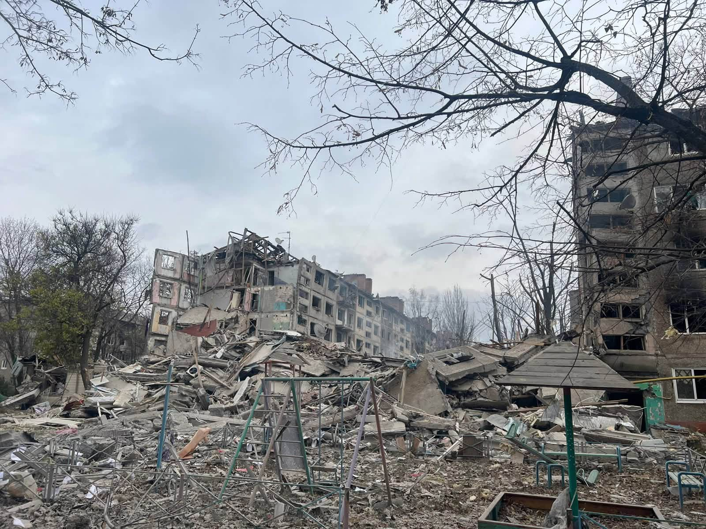
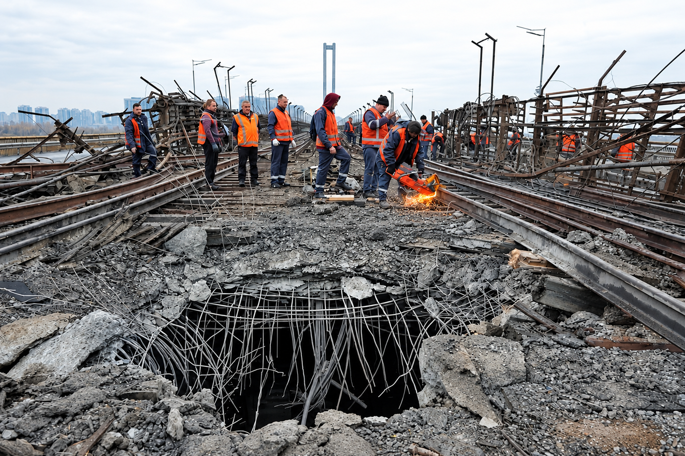
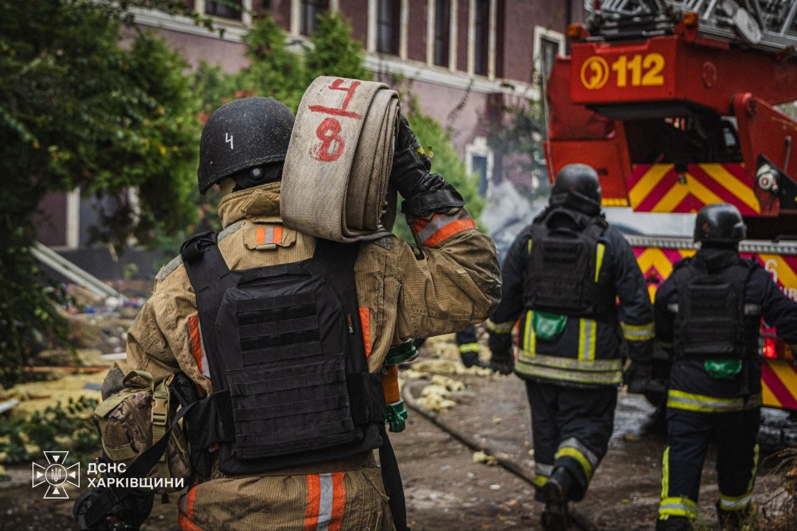
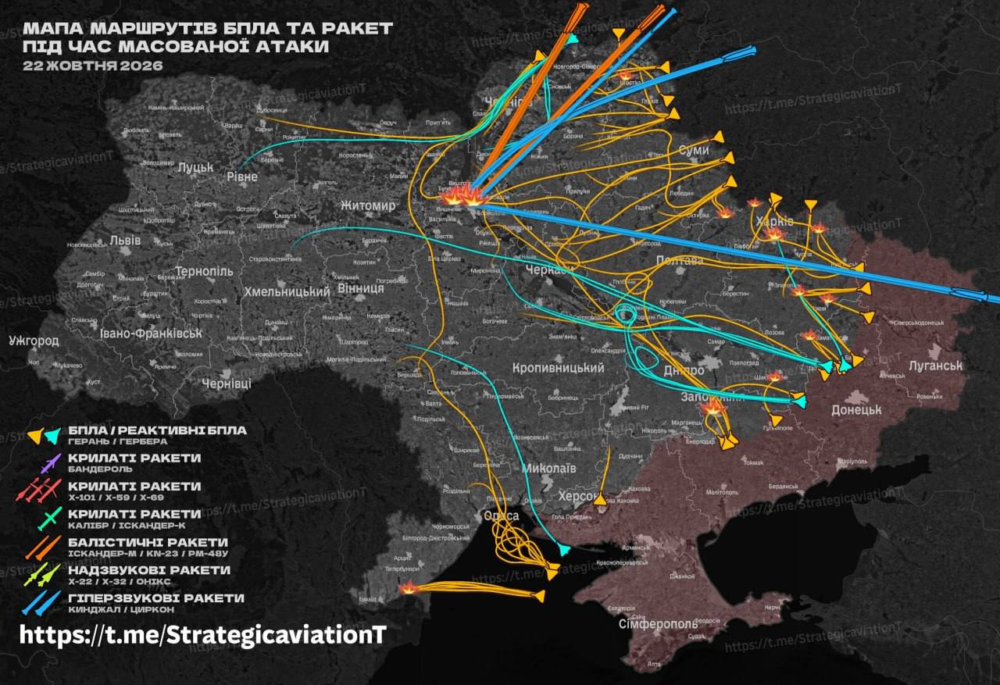
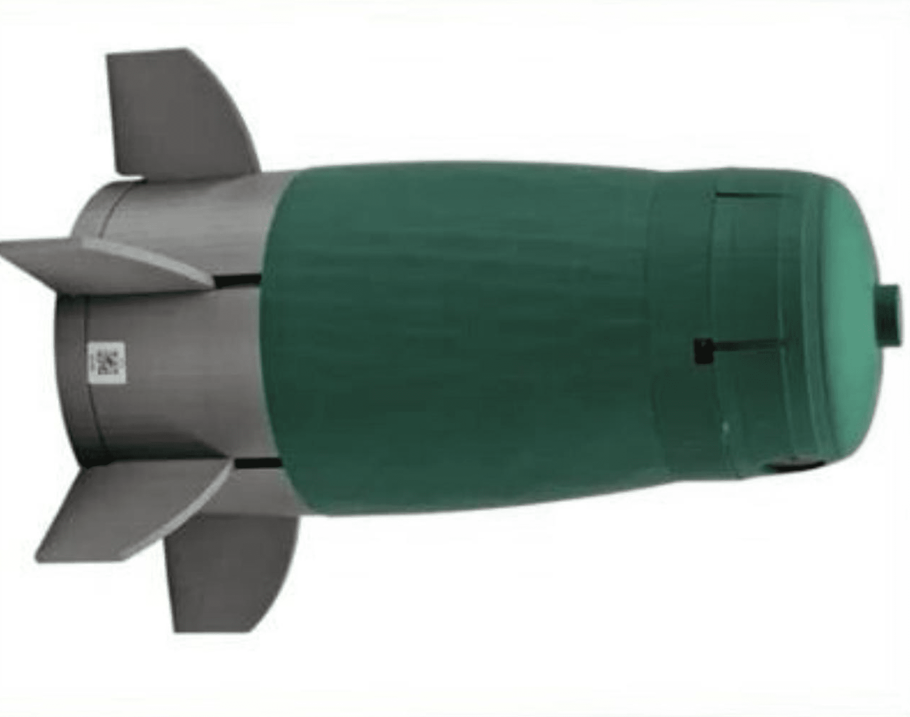
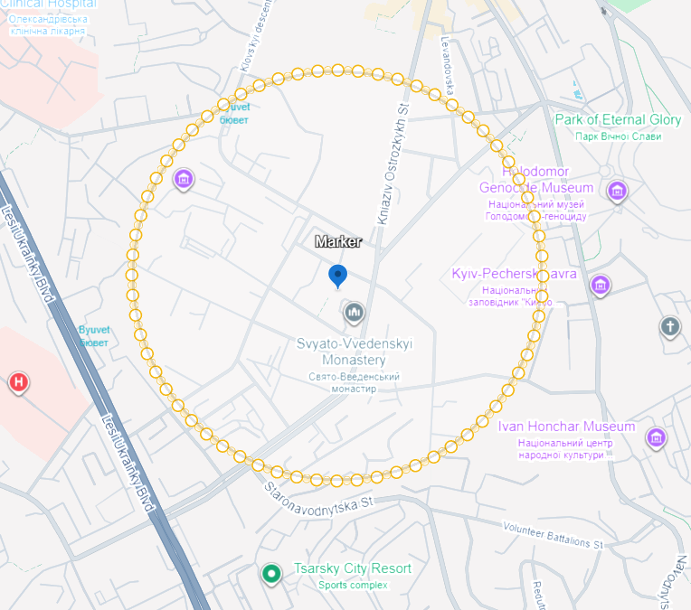
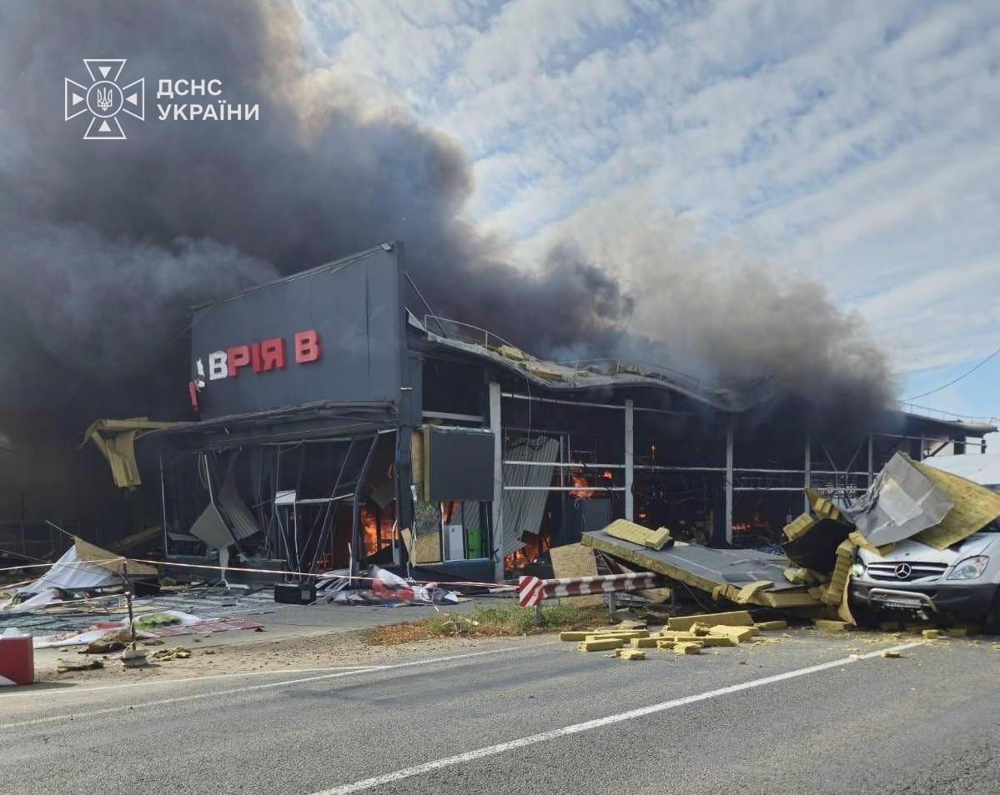
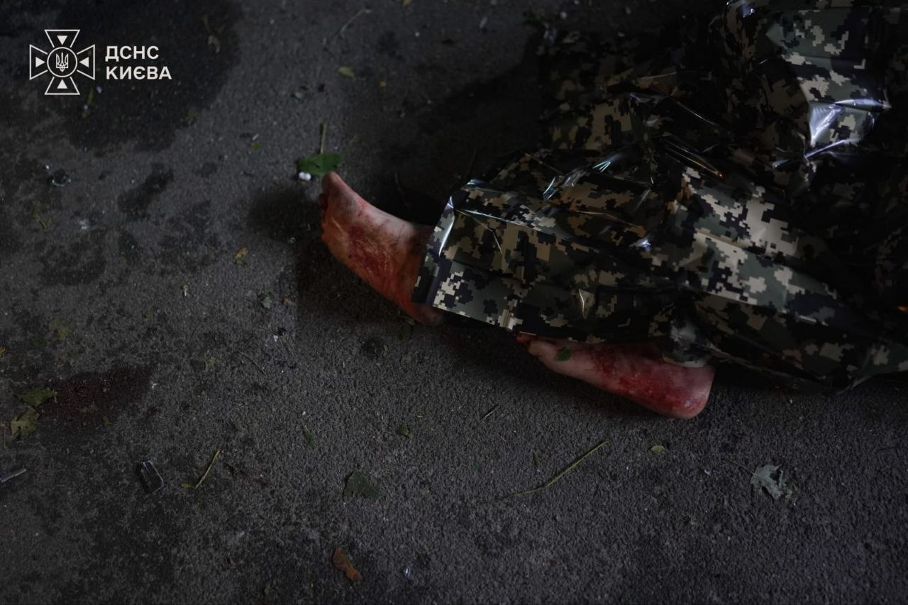
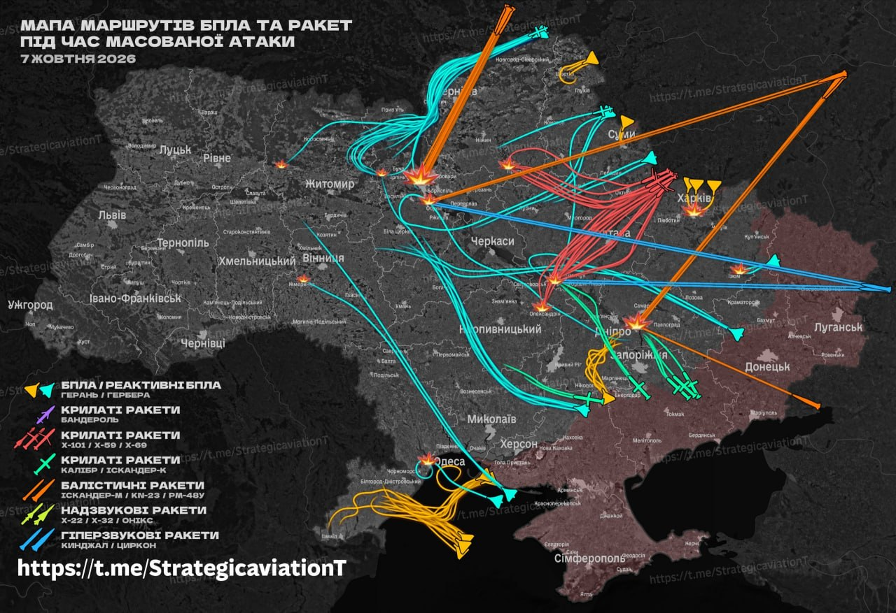

October 1–November 1, 2026. Entries and supporting material are grouped by date and collapsed by default. The current chronology shows the latest eight days. Original entry IDs are preserved here.
All times are Kyiv local time. Clocks change from summer to standard time on October 25, 2026; entries retain local clock times.
Kyiv alert entries in this archive are selected records, not an exhaustive interval tally.
Kyiv · DTEK; Ukrainska Pravda · November 1, 2026, 08:02
DTEK announced emergency power cuts in Kyiv on Sunday because of continued Russian attacks on the energy system. The company said crews were repairing damaged equipment when security conditions allowed. The emergency cuts followed Saturday’s renewed strike on a Kyiv thermal power plant, which compounded damage from earlier attacks.
Kyiv · operator / media / eyewitness · November 1, 2026
Kyiv enters Sunday with too little electricity to meet demand. Ukrenergo announced hourly outages for all consumer categories from 06:00 to 23:59, with restrictions equivalent to 1.5–2.5 queues, alongside power limits for industry. Kyiv’s published schedules divide the city by supply group and address. The compiler reports that in some neighbourhoods the expected supply window is as short as 90 minutes over the course of the day. The schedules are provisional and may change as the condition of the power system shifts.
Kyiv · alerts.in.ua and Kyiv Digital · November 1, 2026
The supplied alerts.in.ua history lists seven completed intervals: 00:39–02:53 (2 hours 13 minutes), 03:14–04:07 (52 minutes), 05:03–05:23 (20 minutes), 06:18–06:34 (16 minutes), 06:52–11:16 (4 hours 24 minutes), 12:19–12:41 (21 minutes), and 15:07–15:40 (33 minutes). Their displayed durations total 8 hours 59 minutes. The alerts.in.ua daily aggregate at 23:36 records seven Kyiv alerts and 9 hours 2 minutes under alert, a 3-minute difference. The dashboard retains the daily aggregate, bringing the October 1–November 1 working total to 224 alerts and 193 hours 25 minutes under alert through 23:36. Kyiv Digital’s independently listed intervals have slightly different endpoints and are retained as a separate cross-check.
Kramatorsk, Donetsk region · official · November 1, 2026, 10:05
Russian forces hit Kramatorsk ten times, including with four guided aerial bombs and four FPV drones, wounding six people. The strikes damaged 11 apartment buildings, an administrative building and three cars, according to Vadym Filashkin, head of the Donetsk Regional Military Administration. His morning report also recorded nine strikes on Sloviansk, where one person was killed and two wounded, and the destruction of a café in Sviatohirsk. Across Donetsk region, Russian forces shelled settlements 23 times in 24 hours. Authorities evacuated 416 people from the frontline, including 28 children.

A destroyed building in Kramatorsk after Russian strikes. Photo: Vadym Filashkin, head of the Donetsk Regional Military Administration, November 1, 2026.
Dnipro, Kamianske and Dnipropetrovsk region · DTEK; President Z · October 31, 2026
Russian forces attacked energy infrastructure in Dnipropetrovsk region again overnight, seriously damaging equipment at two DTEK Dnipro Power Grids facilities, the company reported. One facility had been under repair for almost two days after an earlier attack. Large parts of Dnipro and Kamianske, along with residents of Dniprovsky and Novomoskovskyi districts, remained without electricity. President Z said four electrical substations had been attacked in the region during the night. Around 200,000 households in Dnipro and the region were without power. Repair crews continued work as security conditions allowed.
Kyiv region, Shostka, Dnipro and Kharkiv · President Z · October 31, 2026
Russian attacks continued overnight. A drone struck a combined heat and power plant in Shostka before dawn; railway infrastructure was hit in Dnipro and Kharkiv, and a gas-distribution facility was attacked in Dnipropetrovsk region. Z also reported more than 80,000 households without electricity in Kyiv region. Ukrenergo said extensive damage from successive attacks had left the power system under strain in many regions, including Kyiv, with emergency repairs continuing wherever security allowed.
Kyiv · Mayor Vitali Klitschko · October 30, 2026, 23:47
Three drones hit a critical-infrastructure facility in Kyiv on Friday night, disrupting the city’s water supply after power was lost at several facilities, Mayor Vitali Klitschko reported. By 23:47, water service had returned in Obolonsky, while Sviatoshynsky, Podilsky and Shevchenkivsky districts remained on reduced pressure. The Left Bank, Pechersky, Solomyansky and Holosiivsky districts were without water. Energy workers were working to restore power.
October 30 is a day of mourning in Kremenchuk and across Poltava region, Dnipro and Chernihiv after Russian attacks killed civilians. The October 29 strikes killed 14 people at Dnipro railway station, three in Kremenchuk, two teenage girls in Chernihiv and one person in Kyiv. A wounded railway-station victim died in hospital on October 30. Overnight drone attacks continued across Dnipropetrovsk region, while a renewed strike left Dnipro without power. Russian drones also struck Kyiv’s combined heat and power plant again on October 30, as attacks on energy facilities deepened electricity shortages and prompted further restrictions.
Russian Shahed drones struck a Kyiv combined heat and power plant on Friday evening, Z reported. DTEK said the renewed hit compounded damage from earlier attacks and further complicated the capital’s energy situation. The plant was again among the energy facilities targeted in a nationwide wave of strikes.
Ukraine · Ukrenergo · October 30, 2026, 10:25 and 18:10
Russian attacks damaged energy facilities in several regions overnight, leaving consumers without electricity in Kyiv, Kyiv region, Dnipropetrovsk, Zaporizhia and Kharkiv regions. Ukrenergo reported emergency restoration work and restrictions on industrial consumption, alongside hourly outages of up to 2.5 queues in some regions. It announced further restrictions for October 31: industrial power limits from 06:00 to midnight and hourly outages for all consumer groups, with 1.5–2.5 queues scheduled in some regions.
Kyiv · Kyiv City Council petition platform · October 30, 2026
A petition to reduce the volume of Kyiv’s outdoor air-raid sirens in residential areas at night collected 929 of the 6,000 signatures required for consideration. Filed on August 31, it also asked the city to synchronize loudspeakers that can start sounding several minutes apart. A January petition for a less aggressive all-clear signal also failed to qualify. The sirens, meanwhile, remain at full volume.
Dnipro, Chernihiv, Kremenchuk, Kyiv and Zaporizhia · regional and city authorities · October 29–30, 2026
October 30 is a day of mourning in Kremenchuk and across Poltava region, Dnipro and Chernihiv after Russian attacks killed civilians the previous day. Flags are at half-mast and public entertainment is suspended in the mourning communities.
In Dnipro, a Russian jet-powered drone struck a railway-station platform while passenger train No. 866, bound for Zaporizhia, was standing there. Fourteen people were initially reported killed and 14 injured. On October 30, a 40-year-old man wounded in the attack died in hospital, bringing the death toll to 15. Eleven wounded people remained hospitalized, six in serious condition, including an 11-year-old boy. The city’s day of mourning also remembers nine other residents killed in Russian attacks during October. Those nine are a month-to-date subtotal, not additional deaths from October 29.
In Kremenchuk, Russian strikes damaged apartment buildings, private homes and a boarding-school building. Three people were killed and 32 injured, including six children. Nine people were hospitalized, two in serious condition. Children at the boarding school were moved to a shelter. Mayor Vitaliy Maletskyi reported that cars were burned or destroyed and that municipal services, rescuers and charitable organizations worked through the night to repair damaged homes.
In central Chernihiv, a Russian strike killed two 15-year-old girls and injured 27 people, including three children. Eight people were hospitalized. The city also declared October 30 a day of mourning.
In Kyiv, a late-evening Russian ballistic-missile attack killed one person. Warehouses caught fire in Darnytsky district; missile debris damaged a building and caused another fire in Dniprovsky district.
In Zaporizhia, Russian FPV drones struck municipal public transport. Regional officials reported four people injured in an attack on a bus and three in a separate attack on a trolleybus. In Kharkiv region, separate attacks injured civilians in Kharkiv, Lozova and Izium; the Izium strike damaged a five-storey residential building, with 13 people reported injured.
Dnipro and Dnipropetrovsk region · regional administration · October 30, 2026
A renewed Russian attack temporarily cut electricity to more than 350,000 customers in Dnipro and nearby settlements. Water and sewage pumping stations switched to backup generators. Energy crews restored power to some consumers overnight, but by 07:22 the regional administration reported that Dnipro was again without electricity as the damaged grid failed to withstand the load. Essential city services were switching to generators; restoration work continued.
Dnipropetrovsk region · regional administration · October 30, 2026
Russian forces attacked four districts more than 20 times with drones, regional administration head Oleksandr Hanzha reported. In Dnipro, an enterprise and infrastructure were damaged. Attacks also hit communities in Nikopol, Synelnykove and Kamianske districts. Ukrainian air defenses shot down 14 Russian drones over the region overnight.
In Dnipro, a Russian jet-powered drone strikes a railway-station platform while train No. 866 for Zaporizhia is present. Later reporting raises the death toll there to 14. In Kremenchuk, three people are reported killed and 32 injured, including six children, after a Russian strike damages an apartment building. In Chernihiv, two 15-year-old girls are reported killed in a Russian attack on the city center, with 27 people injured. Across Kharkiv region, Russian strikes hit Kharkiv, Lozova and Izium, injuring civilians and damaging homes and other civilian sites. October 30 is declared a day of mourning in Poltava region and Dnipro.
Kharkiv region · regional administration · Oleh Synehubov, October 29
Russian attacks hit Kharkiv and 19 other settlements in Kharkiv region over the previous day, killing one person and injuring eight, including a child, regional military administration head Oleh Synehubov reported on October 29. Damage included an educational institution, postal warehouses, buses, trucks, homes and other civilian property. A separate UAV strike in Kharkiv’s Industrial district injured one person on October 29. A Russian missile strike on Lozova later injured six men, all of whom were hospitalized. In Izium, three guided aerial bombs struck a five-storey residential building, partially destroying floors one through five. The reported injury toll rose to 13, with seven people hospitalized. Rescuers freed two people from the rubble. The search continued, with the number of people potentially trapped still to be clarified.
Kremenchuk, Dnipro, Chernihiv and Izium · regional authorities and public broadcaster · Suspilne, October 29
Later reports on October 29 raised the number killed in the Russian strike on Kremenchuk to three and the number injured to 32, including six children. Nine people were hospitalized, two in serious condition. Poltava region declared October 30 a day of mourning.
In Dnipro, 14 people were reported killed and 14 injured in the Russian strike on the railway station. Thirteen of the injured were hospitalized and six were in serious condition. Dnipro declared October 30 a day of mourning for 23 people killed in Russian attacks across the region this month: 14 in the station strike and nine in other attacks. The nine are a monthly subtotal, not additional deaths attributed to October 29.
In central Chernihiv, 27 people were reported injured in a Russian attack; eight were hospitalized, including three children. Two 15-year-old girls had earlier been reported killed. In Izium, four people were killed in the previous day’s Russian airstrike, according to Kharkiv Regional Military Administration head Oleh Synehubov. Earlier updates had reported injuries as rescue operations continued.
A Russian jet-powered UAV struck a platform at Dnipro railway station while train No. 866 on the Dnipro–Zaporizhia route was standing there, according to the regional administration and Ukrzaliznytsia. People were on the platform despite an announced heightened-danger warning. At 11:29, regional administration head Oleksandr Hanzha reported that 13 people had been killed and at least five injured. Medics were providing assistance. The available statements do not establish the condition of the train or whether railway services were disrupted.
Kremenchuk, Poltava region · regional military administration · Vitaliy Diakivnych, October 29, 12:19
A Russian drone hit a multi-storey residential building in Kremenchuk, according to Poltava Regional Military Administration head Vitaliy Diakivnych. In a 12:19 update, he reported preliminary information that two people had been killed and one injured. Parked cars caught fire, and emergency services were working at the scene. The casualty figures were described as preliminary.
Chernihiv · city military administration · Dmytro Bryzhynskyi, October 29, 12:02
A Russian UAV struck in the city, killing two people and injuring two, according to Chernihiv City Military Administration head Dmytro Bryzhynskyi. He reported that fires broke out in shops. The administration’s 12:02 update revised an earlier preliminary report of one injured person. The precise site and extent of damage remain unspecified in the post.
Kyiv and Kyiv Oblast · energy operator and media · Ukrenergo, October 28, 18:51; DTEK, October 29, 08:52
Ukrenergo announced hourly power cuts on October 29 from 06:00 to 23:59 in parts of Ukraine, citing the effects of mass Russian attacks on energy facilities. Kyiv and Kyiv Oblast are both affected. DTEK’s regional schedules provide for outages of up to ten hours, with the longest stretch for some households lasting seven and a half hours continuously. The weather offers little consolation: damp autumn conditions, brief clear spells, winds of 7–12 m/s and temperatures in Kyiv no higher than +10°C.
At 08:52, DTEK reported that, on Ukrenergo’s instruction, emergency power cuts had also been introduced in parts of Kyiv’s Holosiivsky and Solomiansky districts. Scheduled outage timetables do not apply during emergency cuts; DTEK said it would post updates on its Telegram channel.
The Uninvited samples the political vintage, finds the archive full of receipts, and discovers that everyone was told. A cellar tour through the best bottles since January 2025, with a bridge that has supplied its own commentary.
South Bridge repairs continue after the October 27 strike damaged road, metro and utility systems. A drone strike kills a civilian in Kharkiv as reports from Donetsk region add to the nationwide toll.
Osnoviansky district, Kharkiv · mayor · Ihor Terekhov, October 28, 13:23
A Russian combat drone struck Kharkiv’s Osnoviansky district during the day on October 28, starting a fire at the impact site. At 13:23, Mayor Ihor Terekhov confirmed that one person had been killed.
Kyiv · city administration · Kyiv City State Administration, October 28
The Russian strike on October 27 damaged the South Bridge’s reinforced-concrete span, roadways, metro structures and utility networks, the Kyiv City State Administration reported. Municipal repair crews are working around the clock in areas where no critical damage has been found.
Kyiv Metro has restored essential power-supply, signaling and communications cables and resumed train service between Osokorky and Chervony Khutir. Repairs to other utility networks continue. Research institutes are conducting dynamic tests, geodetic monitoring of structural deformation, defect monitoring and verification calculations. An inspection report is expected early next week, after which authorities will decide on further repairs to the bridge and the above-ground section of the Green Line.
Konotop, Sumy region · mayor and energy operator · October 28
Four days after Russia's October 24 attack, Ukrenergo now expects electricity supply to be restored to all consumers in Konotop by the end of Wednesday. The operator cautions that, at first, grid constraints will require voltage to be supplied on a rotational basis. Emergency repairs and additional restoration measures are continuing.
According to the Energy Ministry, the attack initially left around 200,000 consumers without electricity. As of Wednesday evening, around 4,500 subscribers remained without power. Emergency outages have been necessary during repairs because crews cannot work on energized equipment. Ukrenergo says the consequences of the attack require complex technical solutions, although the steps needed are clear.
Before the full-scale invasion, Konotop had about 83,500 residents. Wartime estimates vary: Mayor Artem Semenikhin said in 2024 that around 60,000 people remained in the city, while a UN Development Programme profile published in March 2026 described more than 80,000 residents plus several thousand displaced people.
Earlier on Wednesday, Mayor Artem Semenikhin said there was no reliable restoration forecast. The city has been relying on generators, with fuel needs estimated at 400 tonnes for the next several days. He said 20 tonnes were expected from the regional reserve and that heat supplies would be maintained. Earlier reports said the hospital and water utility had been connected only briefly at night.
Prime Minister Serhiy Koretsky said he had spoken with the mayor and ordered the Energy Ministry and Ukrenergo to urgently address the situation and restore power as soon as possible. The government was also to provide diesel fuel on Wednesday for alternative power sources needed by the heating plant and water utility. Representatives of the ministry, Ukrenergo, the regional military administration, the mayor and the regional power company are coordinating the response.
The mayor urged residents to use Points of Invincibility and said cafes and other businesses were also offering assistance. Residents have raised concerns in comments about generators missing from some support points and water quality, though those reports have not been independently verified.
The Energy Ministry said Russia's October 24 drone attack targeted energy infrastructure in Sumy region, including electrical substations supplying Konotop. Energy facilities have been attacked repeatedly.
Ukraine · official and operator reports · Ukrenergo, DTEK, October 27–28
Russian attacks continue to damage Ukraine's energy infrastructure, forcing rolling blackouts and straining repair crews.
On October 27, Ukrenergo reported fresh outages in seven regions and restrictions to prevent overloading equipment damaged in earlier attacks. On October 28, hourly outages continued in parts of the country, with restrictions on industrial consumers through 23:59.
In Kyiv region, the October 27 schedule listed 5.5–7.5 hours of outages across 12 subgroups. Kyiv's revised schedule for October 28 showed planned outages of five to eight hours across its 60 groups. The schedules document the scale of the disruption, although actual outage times may vary by address.
In Kyiv, DTEK reported that a company office was damaged during the October 27 attack on the capital.
DTEK also reported two employees killed in Russian drone strikes on October 25 and 26: driver Vitaliy Shcherbyna and 41-year-old miner Valentyn Kotelevskyi, who had relocated to Pavlohrad from Lysychansk.
The outages reflect both fresh damage and the continuing strain on an energy system forced to operate with equipment already damaged by earlier attacks.
Donetsk region · regional administration · Vadym Filashkin, October 28, 10:04
Regional administration head Vadym Filashkin reported two people wounded in Sloviansk, damage to apartment blocks, businesses, a church, a private house and industrial premises, and further damage in Novostepanivka, Novobakhmetieve and Rozdollia. One person was killed in Novodonetske. In Iverske, one person was killed and one wounded.
Filashkin said settlements in Donetsk region were shelled 24 times over the previous day. A total of 750 people, including 82 children, were evacuated from the frontline.
The October 27 morning update had already recorded a death in Iverske. To avoid a possible duplicate, the nationwide working minimum adds only the death reported in Novodonetske unless a separate Iverske fatality can be established. Vadym Filashkin, October 28.
Kyiv · official statement, reported · Ukrainian media, October 28
Ukrainian Telegram news channels circulated reports on the morning of October 28 that President Z had said Kyiv was insufficiently prepared for winter and Russian attacks. The reports followed a conversation with journalists on October 27, with publication held until the following morning. Z was reported as proposing a special cabinet involving business representatives and public administrators to strengthen the capital’s resilience. He was also reported as saying that his assessment was not connected with his personal attitude toward Mayor Vitali Klitschko.
The proposal for a special cabinet is not entirely new. A report published on October 27 described Z as having discussed the idea with journalists on October 23, saying it should strengthen the mayor, Kyiv residents and the city. The latest reports repeat the proposal while foregrounding the criticism of the capital’s preparedness.
Klitschko’s own updates the previous afternoon described measures discussed at a meeting of the Kyiv Defence Council. The city is to find UAH 1 billion for a government-backed project to build combined water crossings over the Dnipro and access roads, with locations determined by military command. The council also discussed additional technical measures to protect existing bridge structures amid intensified attacks on critical infrastructure. In a third update, Klitschko said the council discussed maintaining and equipping shelters, including mobile shelters, and reiterated his instruction to district heads to prioritise shelter spending and consider reallocating funds within their budgets.
These updates document actions announced by the mayor. They do not, by themselves, establish how far the city’s overall winter-resilience plan has been completed. For the wider strategic and infrastructure context, see The Kyiv Cauldron.
Kyiv’s emergency power stations deliver 1,800 watts continuously, though some appliances have ambitions beyond their station. The pressure washer must be gently discouraged, while the internet may survive several hundred phone recharges. A Canadian adventurer lives hundreds of miles from civilization. In Kyiv, civilization is close at hand, but the electricity has gone wandering.
Meanwhile, Russia has damaged the South Bridge, and Petro Poroshenko tells parliament that Ukraine needs better defenses against ballistic missiles and jet-powered Shaheds. Nobody disagrees. The power limits were printed on the box. The bridge warnings were there, too. Everyone had been told in advance and, with characteristic courtesy, declined to believe it.
South Bridge closure diversions for heavy vehicles via Boryspilska and Pryvokzalna streets, and for cars via Dniprovska Embankment towards Darnytsky and Paton bridges. (Map c/o National Police)
Oct. 27
A Russian attack killed one person and injured 14 in Kyiv the previous evening. Donetsk regional administration reported three people killed and 22 wounded across the region, with residential and commercial damage in several communities. A humanitarian ceasefire took effect around occupied Oleshky.
The supplied alerts.in.ua tracker records a Kyiv citywide drone alert from 12:57 to 13:20 on October 27, lasting 23 minutes. This matches the compiler’s contemporaneous alert report at 12:57 and is counted as one completed interval.
Sources: compiler field report, October 27; alerts.in.ua Kyiv alert tracker.
The citywide Kyiv alert began at 03:25 and ended at 04:21 on October 27. The tracker reports a duration of 56 minutes, which is used in the cumulative total.
Sources: compiler field report, October 27; alerts.in.ua Kyiv alert tracker.
Bila Tserkva · municipal utility; residents · October 27, 2026
Residents of Bila Tserkva, a city of roughly 200,000 people, report repeated interruptions to water supply. On October 27, municipal water utility Bila Tserkva water utility announced emergency repairs to a 100-mm water main at 14 Pavla Skoropadskoho Street, with water supply cut off. The company also reported a separate interruption at 88 Pavlichenko Street, affecting two private houses. Residents complained of going without water for three days in the Tarashchansky district, and of half-day interruptions on Zenitnoho Polku Street despite no reported pipe break.
Kyiv / Dnipro River · official · Vitali Klitschko, October 27
Kyiv plans to allocate UAH 1 billion to a government-backed project to build combined water crossings over the Dnipro River and access roads, Mayor Vitali Klitschko said after a meeting of the Kyiv Defence Council. The government approved an experimental project covering several regions in Cabinet resolution No. 1295 on October 15. Military command will determine where the crossings are located, with the Kyiv City Military Administration among the bodies responsible for coordination. The city is to find the funding on the government's recommendation.
The Defence Council also discussed the security of Kyiv's existing bridges amid intensified attacks on critical infrastructure. City specialists are developing additional technical measures to protect bridge structures, and military proposals were heard, Klitschko said.
Donetsk region · official · Vadym Filashkin, October 27, 09:36
Russian attacks killed three people and wounded 22 across Donetsk region, regional administration head Vadym Filashkin reported in his morning update. One person was killed in Sukhanivka, one in Kramatorsk and one in Iverske. In Yasnohirka, 16 people were wounded. Sloviansk reported three wounded, Kramatorsk one and Pryvillia one.
In Bilozerske, three two-storey apartment buildings were destroyed and two damaged. Damage was also reported to homes, shops, vehicles and other civilian property in Sloviansk, Kramatorsk, Yasnohirka and nearby communities. Russian forces shelled settlements in the region 37 times over the previous day. Authorities said 247 people, including 60 children, were evacuated from the frontline.
Kyiv came under a ballistic-missile attack after the citywide air-raid alert began at 03:25. At 03:59, Mayor Vitali Klitschko reported a hit on an administrative building in Podilsky district and hits at two other addresses involving non-residential buildings. No casualty figure was included in that update. The new impacts are being tracked separately from the previous evening’s attack until further reporting clarifies the sequence.
At 05:04, Mayor Vitali Klitschko confirmed a hit on the South Bridge and damage to metro infrastructure. At 06:54, the eRadar channel reported that at least three ballistic missiles had hit the bridge, damaging the road surface and bridge structures. That missile count is attributed to eRadar and has not been independently confirmed here. Klitschko, October 27, 07:58; eRadar, October 27.
A separate military-analysis Telegram channel, vanek_nikolaev, claimed that four Iskander-M missiles targeted the South Bridge overnight. This is a channel's assessment, not an independently confirmed missile count, and differs from eRadar's report of at least three hits. vanek_nikolaev, October 27.
Prime Minister Serhiy Koretsky said the overnight attack hit both the South Bridge and metro infrastructure and instructed the Ministry of Restoration, Infrastructure and Transport to accelerate repair work. He said the government would support the restoration and urged Kyiv authorities to add replacement ground transport where needed, including services connecting with operating metro stations and the city electric railway. The prime minister cited the need to restore movement between the two banks as traffic increased on other bridges. Koretsky, October 27.
At 07:58, Klitschko said the South Bridge was closed while specialists assessed the damage. Metro trains on the green line remained suspended between Osokorky and Chervony Khutir because of the hit to metro infrastructure on the bridge. The red line was operating end to end between Akademmistechko and Lisova after overnight repairs to damage between Darnytsia and Chernihivska and to exits at Lisova. The city added buses on routes between the left and right banks. These are separate road and metro restrictions, and their status may change as inspections continue. Klitschko, October 27, 07:58.
Later on October 27, KGVA spokeswoman Kateryna Pop said it was too early to give a timetable for reopening South Bridge traffic or restoring metro service to the left bank. Specialists were assessing the road surface for vehicle safety and evaluating damage to metro infrastructure. The authorities will decide whether to reopen the bridge fully or partially and whether metro trains can resume running toward the left bank after the assessments are complete. Censor.NET, October 27, citing Pop on the national telethon.

Russian missiles caused severe damage to the South Bridge in Kyiv and suspended traffic on the Metro's Green Line linking Vydubichi station to Slavutych station on the left bank of the Dnipro River. October 27, 2026. Photo: Vitali Klitschko / Telegram.
The city had already endured a long stretch of Russian drone activity on October 26, with a citywide alert from 21:41 to 23:11.
Separately, the previous evening’s attack killed one person and injured 14 people in Kyiv, according to Klitschko’s 07:15 update on October 27. Nine of the injured were hospitalized. During the night, officials reported damage near a metro station in Desniansky district, windows blown out at two medical facilities in Dniprovsky district, damage to a non-residential building, and damage to a university dormitory where most of the injured were students. Two emergency medical workers were among those injured, and an ambulance was damaged. Klitschko’s October 27 update.
At 03:04, Ukrainian Ombudsman Dmytro Lubinets announced that a ceasefire had taken effect at 03:00 Kyiv time in designated areas around occupied Oleshky, in Kherson region, to allow a humanitarian mission to evacuate residents. Lubinets said the arrangement followed agreements with Russian ombudswoman Yana Lantratova and was being coordinated through Melania Trump.
In “The People on the Land”, we examine the proposed evacuation from Russian-occupied Oleshky and the uncertainty surrounding the ceasefire, routes and safety guarantees. Roughly 2,000 people, including children, are believed to remain in the town. Across the occupied eastern bank, our working estimate is about 160,000 civilians, while Vladimir Saldo’s public estimates have ranged from 145,000 to 160,000.
The question is not simply how many people can be moved. It is whether they can reach safety by a route they can choose, and what happens to those who cannot leave.
Russian attacks killed one person and wounded nine in Donetsk region, according to the regional administration. In Zaporizhia city, eight people were wounded. Officials in Zaporizhia reported 857 strikes against 52 settlements across the region over the preceding day.
The Kyiv alert history records an interval from 17:50 to 18:45 on October 26 and reports its duration as 56 minutes, one minute longer than the difference between the displayed endpoints. The cumulative total follows the reported duration.
The supplied alerts.in.ua Kyiv history lists a drone-related air alert on October 26 from 09:44 to 09:48, with a reported duration of 4 minutes 46 seconds.
Kyiv · official · Mayor Vitali Klitschko, October 26, 22:03–23:24
Russian strikes across Kyiv on Monday evening killed one person and injured 10, Mayor Vitali Klitschko reported. By 23:24, nine of the injured had been hospitalized. Most of the injured were students from a university dormitory in Desniansky district, where the blast wave shattered windows. A 20-year-old woman was among those hospitalized.
At about 22:03, Klitschko reported a hit near a metro station in Desniansky district and a burning car. He also said an ambulance crew responding to a call had come under fire. A paramedic and an emergency medical technician were injured, initially described as having non-critical wounds, and the ambulance was damaged.
In Dniprovsky district, blast waves shattered windows in the intensive-care unit of one medical facility and in two departments of another. The mayor reported no injuries at either facility. A non-residential building was hit nearby, and one person was reported dead near a supermarket. In Desniansky district, another impact was reported near a residential building where people might have been trapped. The mayor’s updates did not establish that anyone was trapped there.
Reuters also reported damage to residential buildings, educational facilities, metro infrastructure and two medical facilities. Its report said rescue operations were continuing.
Ukraine · official · UN Commission of Inquiry, October 26
The UN Independent International Commission of Inquiry on Ukraine concluded that Russian authorities committed war crimes by intentionally directing attacks against civilian objects and crimes against humanity through systematic attacks on Ukraine’s energy infrastructure. The Commission said the attacks, which have continued since autumn 2022, were intended to deprive civilians of electricity and other essential energy-dependent services and cause suffering.
During the winter of 2025–2026, when temperatures fell to minus 21°C, millions faced prolonged outages of heating, electricity, water and gas. The Commission based its assessment in part on interviews with 255 people who endured the conditions in Kyiv and seven other regions. A 53-year-old Kyiv resident described fearing that sleep would mean freezing to death. A 74-year-old woman said she lay cold and hungry without medicine.
The report also found compelling evidence that Russian authorities trafficked people from 29 countries, using deception or coercion and coordinating with recruiters abroad. Men recruited with promises of civilian employment were taken to Russia, pressured into signing military contracts in Russian and sent to dangerous assignments on the front in Ukraine. Many were killed or went missing.
The Commission also examined Ukrainian attacks on energy infrastructure in Russia and occupied parts of Ukraine, but said it could not investigate their impact further because Russia denied access and did not respond to its requests for information. It called for attacks on civilians and civilian objects to stop and for trafficked persons to be discharged from Russia’s armed forces.
Kharkiv · official · Mayor Ihor Terekhov, October 26
Terekhov said Russian forces destroyed the city's last operating Epicenter hypermarket on October 24, after attacking it three times in two months. Jet-powered drones caused a fire that engulfed the store's trading halls and warehouses.
The store provided hundreds of jobs and supplied materials for residents repairing homes damaged by Russian attacks, including through the state eVidnovlennia recovery program.
Kharkiv endured 36 attacks last week, 28 involving jet-powered Shahed drones. Three people were killed and 28 injured, including three children. Six city districts came under attack, damaging homes, businesses, railway and energy infrastructure, the television tower and the Kharkiv circus.
Three emergency workers were injured by attacks while fighting fires on October 24, and a fire engine was destroyed. On October 26, Terekhov reported another strike on the Kholodnohirsky district, with the consequences still being assessed.
Donetsk region · official · Vadym Filashkin, October 26, 09:59
Russian attacks killed one person and wounded three in Kramatorsk, according to Donetsk Regional Military Administration head Vadym Filashkin in his morning operational update. Four people were wounded in Sloviansk, and one each in Donetske and Serhiivka. Russian attacks damaged residential buildings in several communities, including 26 private houses and three apartment blocks in Sloviansk, and six apartment blocks and 19 private houses in Kramatorsk. A religious building, buses and cars were also damaged in Kramatorsk.
Filashkin said Russian forces shelled settlements across Donetsk region 41 times over the preceding day. Authorities evacuated 263 people from the frontline, including 30 children.
Zaporizhia · official · Ivan Fedorov, October 26, 07:00
Russian attacks wounded eight people in Zaporizhia city, regional military administration head Ivan Fedorov reported at 07:00 on October 26. Over the preceding day, Russian forces carried out 857 strikes against 52 settlements in Zaporizhia region, according to Fedorov. The tally included two missile strikes on Zaporizhia, 17 air strikes, 674 drone attacks, two multiple-launch rocket system attacks and 162 artillery strikes. Authorities received 60 reports of damage to homes, vehicles and infrastructure.
A humanitarian evacuation from occupied Oleshky raises questions that reach beyond the immediate rescue. Who arranged Newsmax’s exclusive access, what can its crew show, and will other correspondents be allowed to report independently? Shelby Wilder’s work deserves to be judged on its merits, while the ownership of the Ukrainian Newsmax franchise warrants careful scrutiny without turning business connections into accusations.
The people of Oleshky need food, medicine and a safe route out. The operation should be judged by what happens to them, and any successful humanitarian pause should prompt questions about where similar evacuations might be negotiated next.
Russian attacks killed four people in Synelnykove on October 24, after a 62-year-old man died in hospital the following morning. Strikes also damaged infrastructure in Dnipro and homes, shops and vehicles across the region.
Poltava · attributed · Regional administration, October 25
A Russian drone struck the Epicentr shopping complex in Poltava on the morning of October 25, starting a fire. At 12:02, Suspilne reported that regional administration head Vitaliy Diakivnych had said a 52-year-old woman was preliminarily injured. The scale of the damage was still being assessed and emergency crews were working at the site.
Dnipropetrovsk region · attributed · Regional administration, October 25
A Russian drone struck Synelnykove on October 24, killing three people and injuring others in a residential area. A fire broke out in an apartment building, while a shop and cars were damaged. At 08:52 on October 25, regional head Oleksandr Hanzha reported that a 62-year-old man had died in hospital, bringing the death toll to four. Thirteen people were injured in the strike, including an 11-year-old girl. Four injured people remained hospitalized in serious condition.
Across the region, Russian forces attacked three districts more than 20 times with drones and an aerial bomb. Infrastructure was damaged in Dnipro. In the Nikopol district, a 50-year-old man was hospitalized in moderate condition after another attack, and a private house was damaged.
Z said Russia had launched about 1,600 guided aerial bombs, 48 missiles of various types, including ballistic missiles, and nearly 2,300 attack drones against Ukraine over the past week. He said strikes had caused deaths and injuries almost daily and damaged sites in nine regions, including thermal power plants, substations, coal mines, grain storage facilities, shopping centres and a postal terminal.
In his account, four people were killed and 22 wounded in strikes on Dnipropetrovsk region. In Vinnytsia, a drone hit a residential apartment block and injured six people. In Kharkiv, Russian forces struck a hypermarket and then hit emergency responders who arrived at the scene, wounding rescuers.
At 07:30 on October 25, the regional administration reported three dead and 15 injured across three districts, including three dead and 14 injured in the Synelnykove district. At 08:52, regional head Oleksandr Hanzha said a 62-year-old man had died in hospital after the October 24 strike on Synelnykove, bringing that city's toll to four killed and 13 injured. These time-stamped figures describe overlapping incidents and reporting windows, so they must not be added together as separate casualties. The nationwide dashboard’s documented minimum remains at its October 22 cutoff until the October 23–25 incidents can be checked and deduplicated.
Z said Russia’s attacks were its response to diplomacy and efforts to end its international isolation. He called for continued air-defence support during negotiations, including delivery of already agreed Patriot interceptors and continued support for Ukrainian combat aviation against jet-powered Shahed drones.
Kharkiv · attributed · Kharkiv mayor and regional administration
Russian forces struck Kharkiv repeatedly on Saturday, October 24, hitting the Industrialny, Osnovyansky and Novobavarsky districts with drones and suspected missiles, according to Mayor Ihor Terekhov and regional military administration head Oleh Synehubov.
A Russian drone hit a shopping centre in Osnovyansky district twice and sparked a fire. Visitors and staff had been evacuated. A warehouse building and fence were also damaged, and a 39-year-old man was injured in the district. Repeated strikes and fires were reported in Industrialny district.
Late that night, a jet-powered drone struck Novobavarsky district and set fire to a single-storey building. Terekhov and Synehubov reported one person killed and four injured. Synehubov also reported three men injured in an attack on Derhachi and a woman treated for an acute stress reaction in Lozova.

Kharkiv State Emergency Service crews put out fires after Russian attacks on the city. Photo courtesy of the Kharkiv State Emergency Service.
Russian forces struck Kharkiv repeatedly on Saturday, October 24, killing one person and injuring four in a late-night drone attack. Earlier strikes damaged a shopping centre, a warehouse and other sites across the city.
Black Sea shipping turns deadlier than the Gulf
October 25 · Financial Times
More than 570 vessels have been struck in the Black Sea this year, killing at least 40 sailors, compared with 24 confirmed deaths in the Strait of Hormuz, the Financial Times reported on October 25, citing Ambrey and the International Maritime Organization. About 387 ships were struck from July through September, more than five times the previous quarter’s total, with attacks averaging over four a day. Ambrey attributed around 90% of strikes on shipping in the preceding 45 days to Russia. Attacks on shipping and port infrastructure have cut traffic through Greater Odesa ports from about 400 ships in July to fewer than 10 in September. Ukraine’s maritime agricultural exports fell to 1.4 million tonnes in August, around 75% below prewar levels, while war-risk insurance premiums reached as much as 15% of a vessel’s hull value, almost twice the Gulf rate.
Explosions were reported in Sumy on Saturday morning, after a mass Russian drone attack the previous night damaged civilian infrastructure, homes and Sumy State Pedagogical University and injured two petrol-station workers. In Kyiv, the alert tracker records two overnight intervals: 01:47–02:02 and 03:40–04:32, lasting 15 and 51 minutes by the tracker’s count.
The supplied Kyiv alert history lists a drone-related air alert from 03:40 to 04:32 on October 24 and reports its duration as 51 minutes. The displayed endpoints span 52 minutes by clock time; the cumulative total follows the source-reported duration.
Explosions were reported in Sumy on Saturday morning, October 24, following a very heavy night of Russian drone attacks the previous day. The head of the Sumy Regional Military Administration, Oleh Hryhorov, said Russian drones had deliberately targeted civilian infrastructure in three parts of the city, with damage also reported in the residential sector of Kovpakivsky district.
Two petrol-station workers, a 39-year-old woman and a 54-year-old man, sustained minor injuries and were treated before returning home. The attack damaged petrol stations, a warehouse, nearby homes, an administrative building and a parked car, as well as Sumy State Pedagogical University and its dormitory. The Sumy City Military Administration reported 200 damaged windows, 46 balconies and roofs on eight private houses needing repair. The cause and consequences of the explosions reported this morning have not yet been established in the material available here.
A mass Russian drone attack on Sumy injured two petrol-station workers and damaged civilian infrastructure, residential buildings and the Sumy State Pedagogical University. The city administration reported 200 damaged windows, 46 balconies and eight private-house roofs needing repairs. Energy Research Center Director Oleksandr Kharchenko says Kyiv needs another EUR 1.5 billion for winter preparations after spending more than UAH 16 billion since January, and warns that some disruption is almost inevitable. A reported attack on energy infrastructure in Lviv region left 175 settlements without power. Dnipropetrovsk region reported nearly 20 drone attacks across four districts, infrastructure damage in Dnipro and two civilians injured. Kyiv’s alert tracker lists eight intervals that day, including 11:13–11:55 and 14:24–14:49. Kyiv will temporarily close South Bridge traffic toward the left bank from noon to 15:00 for repairs intended to speed restoration of green-line metro trains. Vinnytsia region reported damage to energy and industrial infrastructure after a mass attack, without identifying the facilities. A DTEK thermal power plant separately reported that it had stopped generating after an attack.
Show entries and evidenceFun Fact FridayCommentary · A wrong turn in the mud
On October 15, Donald Trump told Newsmax that Russian tanks could have reached Kyiv, but a general he called “obviously not a very good general” turned them into muddy farmland.
Seven days later, Z rejected that account in a nearly two-hour conversation with Steven Bartlett on The Diary of a CEO.
Neither man has visited Rusaniv or Peremoha.
So we did.
Click the map to reveal the photograph of the Trubizh River.
The bridge over the Trubizh River between Rusaniv and Peremoha was blown up in the first days of March 2022 to prevent Russian troops from advancing on Kyiv.
The supplied Kyiv alert history lists a drone-related air alert from 14:24 to 14:49 on October 23, with a reported duration of 24 minutes. The displayed endpoints span 25 minutes by clock time; the cumulative total follows the source-reported duration.
Dnipropetrovsk and Lviv regions · regional administration reports
Russian forces attacked four districts of Dnipropetrovsk region with drones nearly 20 times, damaging infrastructure in Dnipro and injuring two people, the regional administration said in a report published at 07:30 on October 23. In Pavlohrad, an administrative building and a private house were damaged. In Nikopol district, attacks affected Nikopol and the Marhanets, Chervonohryhorivka and Pokrov communities. A 44-year-old man was injured and is receiving outpatient treatment. A 26-year-old woman was injured in the Shakhtarske community of Synelnykove district and is also receiving outpatient treatment. The administration did not identify the infrastructure damaged in Dnipro.
Separately, a Russian drone attacked an energy-infrastructure facility in Lviv district during an air alert from 11:56 to 12:14, Maksym Kozytsky, head of Lviv Regional Military Administration, said. Electricity was cut to 175 settlements: 154 completely and 21 partially. Energy workers were working to restore supply. The facility and the extent of its physical damage were not specified.
The published Kyiv alert history lists an interval from 11:13 to 11:55 on October 23 and reports its duration as 41 minutes. The displayed endpoints span 42 minutes by clock time; the cumulative total follows the source-reported duration.
Sources: compiler field report, Oct. 23, 11:15; compiler-supplied alerts.in.ua Kyiv alert history.
The published Kyiv alert history lists an interval from 10:12 to 10:34, with a reported duration of 21 minutes. This reconciles the compiler's 10:14 field report with the published interval; it is counted once. The displayed endpoints span 22 minutes by clock time, while the source reports 21 minutes.
Source: compiler field report, Oct. 23, 10:14; alerts.in.ua.
Traffic on South Bridge from Kyiv's right bank to the left bank is scheduled to be suspended from 12:00 to 15:00 on Friday, October 23, for repair work intended to speed up the resumption of train services on the green line of the metro, the Kyiv City State Administration said.
During the closure, buses No. 22 and No. 91 will be rerouted via Darnytsky Bridge. The administration said it would announce separately when traffic returns to normal.
Vinnytsia region was under a mass Russian attack during the previous day, with damage to energy and industrial infrastructure, private homes and outbuildings, Natalia Zabolotna, head of the regional military administration, said.
No casualties were reported. Emergency, municipal and energy workers were restoring damaged facilities and electricity supplies.
The statement does not identify the damaged energy facilities and does not establish that Ladyzhynska thermal power plant was the DTEK station that stopped generating after an attack.
The Kyiv alert history lists an interval from 06:08 to 06:22 and reports its duration as 13 minutes. The displayed endpoints span 14 minutes by clock time; the duration total follows the source's reported figure.
The Kyiv alert history lists an interval from 04:01 to 04:12, with a reported duration of 11 minutes. This reconciles the provisional 04:04 field report with the published interval; it is counted once.
Source: compiler field report, Oct. 23; alerts.in.ua.
The Kyiv alert history lists an interval from 02:22 to 02:50 and reports its duration as 27 minutes. The displayed endpoints span 28 minutes by clock time; the duration total follows the source's reported figure.
Russian forces launched a mass drone attack on Sumy overnight on October 23, striking civilian infrastructure in three parts of the city and damaging residential buildings in Kovpakivsky district, Suspilne reported. Two petrol-station workers, a 39-year-old woman and a 54-year-old man, sustained minor injuries and were treated before returning home.
The attack damaged petrol stations, a warehouse, nearby homes, an administrative building and a parked car. Suspilne also reported damage to Sumy State Pedagogical University and its dormitory. The Sumy City Military Administration said 200 windows and 46 balconies had been damaged, and roofs on eight private houses needed repair. A later Suspilne report described three jet-powered drones hitting petrol stations and damage to four university buildings.
Kyiv has spent more than UAH 16 billion since the start of 2026 on measures to protect critical systems, compared with UAH 2 billion last year, and plans to spend another UAH 4.5-5 billion by year-end. But the city needs a further EUR 1.5 billion to complete the necessary work, Oleksandr Kharchenko, director of the Energy Research Center, said at an Interfax-Ukraine discussion on Friday.
The work includes protecting high-voltage substations and providing backup power for core sewage and heating systems. Local funds have covered most of the spending, with the central budget accounting for about 10%, Kharchenko said. A Treasury payment freeze lasting more than a month delayed work, and some equipment originally due to be installed by November or December will enter service later.
Kharchenko said Kyiv's 1.3 GW of internal generating capacity was physically destroyed in January 2026. The city now relies on external supply. Demand can reach about 2 GW at minus 10 degrees Celsius and is around 1.2 GW in milder weather.
Without local generation, the metro and water utility pumping stations switch to backup power, limiting service. Basic water circulation may continue, but supplying adequate pressure to elevated districts such as Pechersk depends on the main power lines serving water facilities.
"Some inconvenience this winter is almost inevitable," Kharchenko said. He said most cities need two to three years to complete projects to protect energy systems because engineering and regulatory work alone can take seven to eight months. Ukraine may need UAH 250-300 billion annually for at least another two years to strengthen energy security, he added.
Source: Oleksandr Kharchenko, director of the Energy Research Center, speaking at an Interfax-Ukraine discussion, Oct. 23.
Oct. 22
A combined missile and drone attack damaged civilian buildings and transport infrastructure in Kyiv. Local media also reported multiple waves of Russian drones targeting a critical infrastructure site near Vinnytsia on the evening of Oct. 22, with temporary power outages; the site and any damage were not identified in that report. Officials reported casualties, damage in Pechersk and disruption to metro and road operations; weapon counts and some target claims remain attributed.
Show entries and evidence
UKRAINE · OCTOBER 22, 2026

Russia attacked Ukraine on October 22 with up to 150 attack UAVs and up to 30 missiles, most of which targeted Kyiv. Map c/o Strategic Aviation.
Russian drones attacked an unnamed critical infrastructure site near Vinnytsia in several waves during the evening of October 22, according to Vinnytsia | Times. The report said explosions were heard at about 16:30 and 20:30, and electricity was temporarily interrupted in some districts before being restored.
The post said no casualties had been reported and that no official information about damage to the site was available at the time. It did not identify the facility or establish whether it was the DTEK thermal power plant that separately reported stopping generation after an attack.
The compiler reported a red Kyiv alert and ballistic-missile threat at about 20:58. The published daily Kyiv alert list records the interval as 20:56–21:15. The alert is counted once in the provisional total; the difference between the contemporaneous report time and the tracker interval start is retained as a source-timing distinction.
Kyiv police said traffic across Pivdenny (South) Bridge had been temporarily blocked in both directions because of the security situation. The closure was subsequently lifted and road traffic has resumed. The available reports do not specify the time of reopening.
The overnight attack damaged part of the metro infrastructure on the South Bridge, forcing metro operations onto a limited route. The reopening of road traffic does not establish that metro services across the bridge have also resumed; those operations remain a separate service-status question.
The compiler-supplied alerts.in.ua snapshot recorded this interval as beginning at 11:22; the published daily list gives 11:24–11:53. This is one interval, not an additional alert. The dashboard retains the supplied 11:22 start provisionally and records the two-minute discrepancy here.
The supplied alerts.in.ua list showed a Kyiv air alert beginning at 08:51. The published daily list records the all-clear at 09:41, giving a final interval of 50 minutes. This interval is already included in the provisional cumulative duration.
Kyiv / ballistic missile attack · eyewitness and channel reports
Kyiv Informuye reported a red air alert and ballistic threat for Kyiv and the region at 01:55. The channel posted reports of incoming targets and explosions from about 02:01, followed by a citywide all-clear at 02:28. A new red alert and ballistic warning followed at 02:55; the channel then reported further incoming missiles and explosions across the city through at least 03:33.
At 03:11, the channel reported that energy infrastructure on Kyiv’s right bank was under attack and, at 03:16, that smoke was rising over the city. At 03:19 it estimated that about 20–30 missiles had been launched at Kyiv, suggesting energy infrastructure was the main target. That figure and the reported target are attributed to the channel and have not been independently verified here.
An eyewitness in Kyiv reported hearing at least six explosions. At 03:52, Kyiv Informuye reported a jet-powered UAV heading toward Myronivka from Cherkasy region; its route does not by itself establish that it was headed for Kyiv.
At 06:09, Kyiv Mayor Vitali Klitschko initially reported 15 people injured, including two 15-year-olds, with eight being treated in city hospitals. A later Kyiv City Military Administration update reported one person killed and 24 injured, 16 of whom were hospitalized. The administration said consequences of the overnight attack were recorded across six districts. Klitschko reported severe damage to the private sector in Dniprovsky district, damage to an ambulance station and six vehicles in Pechersky district, and a restaurant fire in Sviatoshynsky district. Part of the metro infrastructure on the South Bridge was also damaged, and metro service was operating on a limited route.
The mapping account AMK_Mapping estimated that about 22 missiles were launched: approximately 11 Iskander-M ballistic missiles and eight modified S-400/RM-48U ballistic missiles from areas near Klintsy and Pochep in Bryansk region, and three Zircon missiles from near Millerovo in Rostov region. The account also said CHP-4 and CHP-5 were among the targets hit and claimed none of the missiles was intercepted because Ukraine had run out of Patriot PAC-3 interceptors. These are attributed estimates and claims, not independently established facts in this chronology; exact routes, the status of interceptor stocks and damage at the named plants require confirmation.
VIDEO EVIDENCE / KYIV · OCTOBER 22, 2026
Russia continued its attack on Ukraine’s capital with ballistic missiles on October 22. Video c/o unknown person on the eastern bank of the Dnipro.
Kyiv / Dnipro bridges · expert opinion and eyewitness field report
Properly designed pre-detonation screens could help protect Kyiv's bridges across the Dnipro from drones and small missiles, although preventing major damage from a direct hit by a powerful ballistic or cruise missile would be extremely difficult, Andriy Ozeichuk, director of construction company Rauta and chairman of the board of the Ukrainian Steel Construction Center (UCSB), told Interfax-Ukraine on October 22.
Ozeichuk said steel cables with netting stretched between them were the most effective option for protecting roadways. Bridge supports and the sides of spans could be protected with standoff structures made of lattice steelwork, using materials already available. Such screens could be adapted to individual bridge designs, repaired after localized damage and reinforced if necessary, without imposing excessive loads on existing structures.
He cited possible ways to use existing bridge structures as mounting points: the central cable-stayed pylon of Pivnichny Bridge to help protect its roadway, and the sides of the roadway on Darnytsky Bridge to support screens around the piers.
On Saturday, October 17, ukraine@war visited all seven bridges spanning the Dnipro in Kyiv, travelling by car and on foot. The circuit offered a firsthand view of the bridges as they stand, including protective netting and the longer-standing condition of the structures.
Many of Kyiv's bridges are dilapidated, including the Paton Bridge, photographed through a car window on October 17, 2026. The bridge can also be crossed on foot. Photo c/o ukraine@war.
Source: Andriy Ozeichuk, director of Rauta and chairman of the board of the Ukrainian Steel Construction Center, in comments to Interfax-Ukraine, Oct. 22; firsthand field observations by ukraine@war, Oct. 17.
Pechersk, Kyiv / Sviato-Vvedensky Monastery and surrounding civilian area · attributed statement and official damage report
President Z said Russia used three ballistic missiles with cluster warheads against Kyiv overnight, and that one struck the area between Kyiv-Pechersk Lavra and Sviato-Vvedensky Monastery. He said monastery buildings, homes, shops, cafes and other civilian infrastructure were damaged, and that there were no military facilities nearby.
Serhiy Beskrestnov, a presidential adviser and radio technology expert, identified the weapon as an Iskander ballistic missile carrying a K5 cluster warhead. In comments cited by Ukrainska Pravda, Oct. 22, Beskrestnov said the warhead dispersed 58 bomblets over an area of approximately 400 by 400 metres. He described the strike as intended to injure as many people as possible. The weapon identification and the assessment of intent are attributed to Beskrestnov, not independently established by the photographs from the strike area.

Reference image of the K5 cluster warhead, as identified by Beskrestnov. This is a weapon-reference image, not a photograph of munition remnants recovered at the strike site.

Z said a ballistic missile with cluster warheads struck the area between Kyiv-Pechersk Lavra and Sviato-Vvedensky Monastery. Oct. 22, 2026.
Glavcom, citing the Pechersk District State Administration, reported damage to 18 residential buildings on five streets, the Sviato-Vvedensky Monastery, an ambulance station and six ambulances. The report also described damage to a grocery store, administrative buildings, facades, windows and parked vehicles. These damage figures are attributed to the district administration.
A further account published on October 23 by the Union of Orthodox Journalists said drone debris fell on the monastery grounds at about 03:05, damaging the roof and walls and breaking windows. Two people helping in the monastery kitchen sustained shrapnel wounds; members of the monastic brotherhood were unharmed. The monastery held Divine Liturgy that morning despite the damage, according to the report. This account does not independently establish whether the debris was associated with the ballistic strike described above or a separate impact.
Lymanivka, Lozova community / civilian death · official
A Russian attack killed a 42-year-old woman in Lymanivka, in Lozova community, Kharkiv region, according to regional administration chief Oleh Synehubov. The regional administration said attacks over the preceding 24 hours had affected Kharkiv city and 11 other settlements in the region. In Lymanivka, four private houses were damaged. No images are included in this entry.
A ballistic attack damaged buildings and homes in Kyiv; six people were injured. A separate drone strike killed two people in Sviatoshynsky district, while other reports documented damage to energy and transport infrastructure.
The supplied alerts.in.ua snapshot listed a new Kyiv air alert beginning at 05:18 and active for 26 minutes at the time of the snapshot. The same list records an earlier alert from 02:38 to 04:55.
This entry records the supplied tracker state only. The general alert interval does not by itself establish whether a ballistic threat has been identified or whether any advance warning was received.
The supplied alerts.in.ua list records a Kyiv air alert from 02:38 to 04:55, lasting 2 hours 17 minutes. This replaces the earlier, conflicting snapshot entry that gave a 02:39 start and did not record an end time.
Kyiv / residential building, vehicles and transport infrastructure · official
At 00:19, Klitschko reported a drone strike on a transport-infrastructure facility in Solomiansky district and a fire. At 06:09, he reported a drone falling on parked cars in Desniansky district. At 06:25, he reported a separate drone fall on open ground in Solomiansky district, with no fire reported at that stage.
At 06:56, Klitschko reported a hit on a 24-storey residential building in Sviatoshynsky district at the level of the 20th floor, where a fire broke out. At 09:16, he said two people had been killed and two injured; both injured people were hospitalized. The reports do not establish that the open-ground fall and the transport-infrastructure strike were the same incident.
The Air Force said Russia had launched Iskander-K cruise missiles and 186 strike UAVs overnight from October 20, including Shahed-type drones and other UAVs. By 08:30, air defenses had shot down or suppressed 150 UAVs, while impacts were recorded at 27 locations and debris falls at 13 locations. The figures were preliminary and covered the nationwide attack, not Kyiv alone.
DTEK reported emergency power outages in Sviatoshynsky district and Bucha district of Kyiv region, later saying they had spread to parts of Kyiv's Obolonsky and Shevchenkivsky districts. Scheduled outage timetables remained in effect elsewhere in the capital and region; repair crews were working to restore supply.
Kyiv Mayor Vitali Klitschko reported explosions in the capital during a ballistic attack at 22:12 on Oct. 21. At 22:49, he reported impacts at an auto-service building and a private house in Dniprovsky district, debris striking another private house in the district, and debris falling near a filling station. People might have been trapped under the rubble at one location, he said, and emergency services were heading to the sites.
At 22:53, Klitschko reported one woman injured and hospitalized. At 00:05 on Oct. 22, he reported a strike on the grounds of a transport-infrastructure facility in Darnytsky district and said six people had been injured in the previous evening’s missile attack; four had been hospitalized.
Source: Kyiv Mayor Vitali Klitschko, Telegram updates at 22:12, 22:49 and 22:53 on Oct. 21, and 00:05 on Oct. 22.
Rivne / supermarket and public transport · attributed
Footage published by the Telegram channel Rivne Holovne appears to show a Geran-5 drone striking a Metro supermarket in Rivne. The channel had earlier reported a very low-flying drone over the city, an explosion and smoke, and published video it described as the moment of impact. The weapon identification is based on the appearance of the drone in the footage and the channel’s description.
Rivne Regional Military Administration head Oleksandr Koval said preliminary information indicated that no one had been injured. The channel also reported that trolleybus route No. 11 was temporarily rerouted to follow route No. 10 in both directions after the attack.
The previous day, an attack on a shopping center in Rivne region injured three people, two of whom were hospitalized.
Dnipro / critical infrastructure and electricity supply · official
Russian forces struck a critical-infrastructure facility in Dnipro, regional administration head Oleksandr Hanzha said. The facility and extent of damage were not identified. More than 30,000 residents in Pavlohrad and Synelnykove districts and the city of Samar were left without electricity. Repair work would begin when security conditions allowed.
A Russian drone struck one of the installations at a Naftogaz gas-production site in Kharkiv region, acting company head Serhiy Fedorenko said. The security situation prevented an immediate assessment of the consequences.
Ukraine / energy infrastructure and civilian sites · official
Russia has attacked energy facilities in Kyiv, Volyn, Odesa and Mykolaiv regions since overnight, Prime Minister Serhiy Koretsky said. He said Russian forces had also struck railways, shopping malls and residential buildings, and targeted civilian enterprises in Volyn, Lviv, Odesa and Zhytomyr regions.
In a separate update on Wednesday morning, the Energy Ministry said Russian forces had attacked energy facilities in Kyiv city and Kyiv, Volyn and Odesa regions overnight and into the morning, leaving some consumers without electricity. The ministry said restoration work was continuing in Ternopil and Khmelnytsky regions after earlier attacks, with power restored to most consumers affected there. New outages had also been reported in Zaporizhia, Kharkiv and Kherson regions amid continuing shelling and fighting. Emergency repair crews were working where security conditions allowed, the ministry said, while daily attacks, prolonged air alerts and the threat of repeat strikes complicated repairs.
A drone attacked a merchant vessel in the Black Sea, Koretsky said. In Kyiv, a drone hit a 24-storey residential building, killing two people. In Korotych, Kharkiv region, a strike destroyed private houses and killed two people. A university building in Kremenchuk and a shopping mall in Uman also came under attack. Injuries were reported in Poltava, Lviv, Cherkasy and Chernihiv regions.
· Kyiv / transport infrastructure and drone debris · official
A Russian drone struck a transport-infrastructure facility in Solomiansky district overnight, starting a fire, Kyiv Mayor Vitali Klitschko reported. Emergency services were working at the impact site. The initial report did not identify the facility or state whether anyone was injured.
At 23:41 on October 20, the Kyiv City Military Administration reported drone debris falling on open ground in Sviatoshynsky district and said there were no casualties according to preliminary information. Ukrinform also reported a drone falling on non-residential territory in Solomiansky district. The available reports do not establish that the debris falls and the transport-facility impact were the same event.
The transport-infrastructure facility is added to the working site list. The open-ground debris report and the unidentified non-residential fall are not counted as additional sites without clearer evidence of a distinct facility.
Vinnytsia region reported a fire at an unnamed critical-infrastructure site after a drone attack, with no casualties. Drone attacks damaged civilian premises across Kyiv; one person was killed and 21 injured. Later, drones hit a Desniansky warehouse and a Sviatoshynsky garage cooperative. Three heating workers were killed in Kramatorsk; three people were killed in the Chabany drone attack, according to regional authorities and independent media; three DTEK energy facilities were attacked in Odesa region.
A Russian attack on Vinnytsia region on October 20 caused a fire at an unnamed critical-infrastructure site, Natalia Zabolotna, head of the regional military administration, said. Emergency crews extinguished the fire and explosives technicians checked the surrounding area for unexploded ordnance.
No casualties were reported. A total of 68 rescuers and 14 vehicles were involved in the response, Zabolotna said.
The site was not identified. This report does not establish that the facility was Ladyzhynska thermal power plant or the DTEK plant that reported a shutdown after an attack on October 22.
· Holosiivsky district, Kyiv / civilian casualties · official
A UAV fell in Holosiivsky district near a filling station close to the boundary with Kyiv region, Kyiv Mayor Vitali Klitschko said at 10:18 on October 20. One person was killed and four people were injured, he said.
Two of the injured were taken to hospital. Medics were examining and treating the other two at the scene, according to Klitschko. His statement did not specify the cause of the UAV's fall or describe damage at the site.
· Odesa region / electricity distribution · operator or company
Three DTEK energy facilities in Odesa region were attacked overnight on October 20, the energy company said. DTEK said the attacks continued damage to the region's electricity distribution networks.
Some households had already been reconnected, while 32,700 families remained without electricity at the time of the company's statement. Repair crews were working around the clock to restore supply, DTEK said. The company did not specify the facilities' locations or the extent of damage at each one.
Air Force spokesperson Yuriy Ihnat said Ukraine received no information from international partners before the first of two Russian ballistic strikes on Kyiv overnight on October 18–19. Information arrived before the second strike, at about 03:00, but Ukraine's own channels warned of the threat only about a minute before the missiles appeared.
On October 20, President Z said early-warning information from partners was working again. The statement does not establish how much warning residents will receive before a future launch.
· Kyiv / warehouse and garage cooperative · official
Russian drones struck a warehouse building in Desniansky district and the grounds of a garage cooperative in Sviatoshynsky district on the evening of October 20, Kyiv Mayor Vitali Klitschko reported. The initial report did not give casualty figures or describe the extent of damage.
These are recorded as two distinct affected sites. The report does not establish that either site was the same as the Sviatoshynsky open-ground debris report or the later Solomiansky transport-infrastructure impact.
· Kyiv / civilian premises and casualties · official
Russian drone attacks on October 20 damaged a residential building, medical facilities, a food-service establishment, a market and vehicles in Holosiivsky, Desniansky, Solomiansky, Obolonsky and Shevchenkivsky districts, the National Police said. Its 18:45 update reported 11 people injured and one woman suffering an acute stress reaction.
By 23:25, Kyiv Mayor Vitali Klitschko reported that 21 people had been injured in attacks on the capital during October 20, with one person killed. Twelve of the injured had been hospitalized, three in serious condition. This city-wide casualty update should not be added to the individual incident entries below as if it described a separate attack.
· Kramatorsk / heating-network workers killed · official
Russian forces attacked Kramatorsk with guided aerial bombs on October 20, killing three men born in 1978, 1984 and 1979 who worked for a municipal heat-supply organization, the Kramatorsk City Council said.
The workers were inspecting heating networks and checking their readiness for the heating season, the council said. They were working to help the city get through winter and keep residents’ homes warm.
Energoreforma, quoting Kramatorskteploenergo Director Roman Polischuk, identified the dead as dispatcher Andriy Dorosh, born in 1978; heating-network equipment repair fitter Yuriy Biriukov, born in 1984; and dispatcher Vitaliy Kobtsev, born in 1979.
The Association of Critical Infrastructure Facilities and the Ukrvodokanalekologiya Association called on the government to grant combatant status to critical-infrastructure workers operating in frontline areas, according to Energoreforma.
Sources: Kramatorsk City Council, Telegram, Oct. 20 (primary source); Energoreforma, Oct. 20, quoting Kramatorskteploenergo Director Roman Polischuk for names and job titles.
The three deaths and four injuries were reported by the Kyiv Regional Military Administration and regional police and corroborated by independent reporting. This casualty count is included in the dashboard's selected-incident subtotal.
Washington / Ukraine peace negotiations · official transcript
Trump called on Ukraine to agree to a settlement with Russia and argued that the balance of the war was worsening for Kyiv. His remarks included the following:
Location: White House, Oval Office. This entry records Trump's statements; the claims within the quotations are not independently verified here.
Oct. 19
Five Kyiv air-alert intervals; one death reported after the overnight ballistic attack, metro service disrupted and energy damage reported in 11 regions.
· Volyn region / energy and critical infrastructure · official
Around 15 Russian drones targeted Volyn region overnight and in the morning, with Kovel, Manevychi and Lutsk among the areas most heavily attacked, Roman Romaniuk, acting head of the Volyn Regional Military Administration, said in a Telegram update at 09:30 on October 19. Critical and civilian infrastructure was damaged by direct hits and falling drone debris. No casualties had been reported.
By noon, Romaniuk said attacks on critical infrastructure had affected the Kovel, Manevychi, Prylisne, Kivertsi and Lutsk communities. The number of electricity metering points without power had risen from around 66,000 at 09:30 to around 68,000 at noon. Emergency repair crews and other services continued working to deal with the damage.
In updates through 16:41, Romaniuk reported that air-raid alerts had been lifted in all districts of the region. The all-clear does not indicate that electricity had been restored.
· Rivne / pharmaceutical distribution · attributed
A Russian drone struck a 2,370-square-metre warehouse belonging to pharmaceutical distributor BaDM in Rivne during a drone attack on October 19. No casualties were reported, Ekonomichna Pravda reported, citing participants in the pharmaceutical market. The warehouse opened in 2012.
EP reported that this was not the first BaDM warehouse attacked by Russia. The company’s 43,000-square-metre distribution centre was completely destroyed in a Russian missile-and-drone attack on December 6, 2025. The Rivne strike establishes damage to another pharmaceutical logistics site; the report does not establish a nationwide medicine shortage.
· Khmelnytsky / industrial damage and electricity supply · official
A Russian attack damaged an unidentified enterprise in Khmelnytsky on Monday, starting a fire, and also damaged one residential building, Serhiy Tiurin, head of the Khmelnytsky Regional Military Administration, said. He did not identify the enterprise or specify its location in the city.
Some electricity consumers in Khmelnytsky region were left without power after a power line was severed, Tiurin said. There were no casualties according to preliminary information, he added.
The overnight ballistic attack damaged metro infrastructure, residential and non-residential buildings, a medical facility and commercial premises. The State Emergency Service later reported eight people injured in Kyiv. President Z and the Energy Ministry described wider damage to energy facilities in 11 regions.
Earlier updates (9)
At 23:24 on October 18, Klitschko reported a preliminary impact on a medical-centre building in Desniansky district and a hit on a non-residential building in Dniprovsky district. Emergency services were sent to both locations.
Kyiv Mayor Vitali Klitschko reported at 00:15 on October 19 that one person had been killed in the attack. At 01:11 he identified the victim as a 21-year-old woman and said three people had been injured, two of them hospitalized.
At 03:11 on October 19, he said Chernihivska metro station on Kyiv's left bank had been damaged. Debris had also severed both a running rail and the contact rail nearby.
At 03:30, Klitschko reported debris striking the first floor of a 25-storey residential building in Solomiansky district and an impact at a non-residential building at another address. At 03:35 he reported an impact on non-residential premises in Dniprovsky district. At 04:21, the Kyiv City State Administration said the above-ground metro station, tracks and cable network had been damaged. Train service was expected to begin in the morning on schedule between Akademmistechko and Darnytsia, while Chernihivska and Lisova stations would remain temporarily closed for entry and exit. At 04:45, Klitschko reported three injured people in Solomiansky district. ASTRA reported that the attack began at about 03:00 and that at least five ballistic missiles had been launched toward Kyiv and the region from Russia's Bryansk region. That missile count and launch origin are attributed to ASTRA, not independently verified here.
At 10:19 on October 19, Interfax-Ukraine, citing the Ukrainian Council of Shopping Centres, reported severe damage to Cosmo Multimall at 6 Vadyma Hetmana Street: the roof and building structures were damaged and part of the floors had collapsed. The adjacent Mercure Kyiv Congress hotel sustained minor glazing damage and remained operational, according to the report.
At 10:21 on October 19, the Kyiv Movement Telegram channel relayed Air Force spokesperson Yuriy Ihnat’s statement that two ballistic strikes had occurred overnight, one at about 23:00 and another at about 03:00. The channel also said no US warning had preceded the first strike. These details are recorded as attributed reporting; the supplied post does not include a direct link to Ihnat’s original statement.
At 10:47 on October 19, President Z said Russia had launched 16 ballistic missiles and more than 200 drones of various types, including jet-powered Shaheds, in a multi-wave overnight attack targeting Kyiv and Kyiv region. He said energy facilities and other infrastructure were targeted, with damage also reported to a medical clinic, school, metro station and residential buildings. Z said energy facilities in 11 regions had been attacked overnight and in the morning, with more than 10 energy infrastructure facilities damaged and at least 550,000 families left without electricity. These are figures in the president’s statement; the post does not provide a detailed regional breakdown or a revised Kyiv casualty total. He also said partners had again failed to warn of the ballistic attack and criticized the blocking of air-defence missile supplies alongside sanctions relief or delays for Russia.
At 11:00, the Telegram channel Реальна Україна | Радар Тривога reported that the Zveropolis contact zoo at the complex had also been affected, saying all animals had survived and were being urgently evacuated. The zoo details are attributed to that channel; independent confirmation was not included in the supplied report.
In an update reported by Ukrainska Pravda at 14:04 on October 19, acting head of the Kyiv City Military Administration Andriy Tkachov said specialists were still assessing the damage at Chernihivska station and that the time needed to reopen it could not yet be forecast. He described the damage to the tracks as very serious, but said equipment and spare parts were available and repairs would be carried out as quickly as possible. Chernihivska and Lisova remained closed for entry and exit; train service continued between Akademmistechko and Darnytsia on schedule.
The compiler reported a red-level alert for a ballistic-missile threat over Kyiv on October 18. This is a historical field report, not a current alert status. The exact start and all-clear times for that interval have not been established from the tracker history.
The provisional October alert count rises to 124. The running time-under-alert estimate remains approximately 113 hours 8 minutes and does not yet include this current interval, because its start time is not confirmed.
The compiler-supplied history lists two Kyiv air alerts on October 18: 09:01–09:27 (26 minutes) and 09:59–11:09 (1 hour 10 minutes). Together they total 1 hour 36 minutes. The first interval includes the 09:03 field report of an active alert. The second alert ended at 11:09.
With the five October 17 intervals now included, the provisional October count is 123. The running time-under-alert estimate is approximately 113 hours 8 minutes, based on the prior 107 hours 17 minutes through October 15, the 4 hours 15 minutes listed for October 17, and 1 hour 36 minutes on October 18. The October 16 intervals and separate 04:15 October 17 field report remain unresolved and are excluded from the duration total.
Nine people were killed and 12 wounded in the October 17 Russian air strike on Sloviansk; rescuers completed rubble clearance on October 21. Five Kyiv air alerts were recorded that day.
Sloviansk, Donetsk region / residential buildings and civilian casualties · official
Nine people were killed and 12 wounded in a Russian air strike on Sloviansk on October 17. Rescuers completed clearing rubble from two destroyed five-storey buildings after five days of work, Sloviansk City Military Administration head Vadym Liakh said on October 21.
Rescuers recovered seven bodies during the operation, including a State Emergency Service employee. Four people were recovered from one building and three from the other. Liakh said the bodies of three women aged 52, 77 and 55 were among those recovered. Emergency crews worked under the threat of further air strikes and drone attacks and cleared more than 200 tonnes of debris.
Source: Interfax-Ukraine, reporting Liakh’s October 21 statement and the State Emergency Service’s account of the rescue operation.
The alerts.in.ua history supplied for this update lists five Kyiv alerts on October 17: 04:33–05:25 (52 minutes), 06:58–08:09 (1 hour 11 minutes), 20:48–21:14 (26 minutes), 21:19–22:02 (43 minutes) and 22:23–23:26 (1 hour 3 minutes). Together, the five intervals total 4 hours 15 minutes. The three evening alerts were separated by gaps of five and 21 minutes.
The dashboard count is updated to include all five tracker-listed intervals, and the running time-under-alert estimate is extended from approximately 107 hours 17 minutes to 111 hours 32 minutes. The earlier field report of an alert at 20:51 appears consistent with the tracker interval beginning at 20:48. A separate field report at 04:15 has not been matched to this history and is not counted as an additional tracker-confirmed interval. The October 16 field-reported intervals also remain unresolved and are excluded from the duration total.
· United States / satellite access and Russian energy trade · official
Secretary of State Marco Rubio said Ukraine does not currently have access to Starshield, the military satellite service used by the U.S. military, and has requested access “in order to conduct deep strikes inside of Russia.” He said the request remained under discussion.
Rubio distinguished Starshield from Starlink, which he described as a commercial product. He denied that the White House had ordered Starlink speeds to be reduced in Ukraine, saying “nobody ordered that Starlink speed to be slowed down” and that, according to his understanding, service had been restored. Those remarks address the commercial Starlink slowdown; they do not establish why Ukrainian users reported disruptions, nor do they resolve separate reports about Starshield access.
In an October 18 interview with Ukrainska Pravda, Khartia brigade drone-company commander Yury Butusov said his unit had experienced the slowdown’s operational effects. He described the speed restriction as especially consequential for fast fixed-wing strike drones using Starlink and said speeds had returned to a maximum of about 160 km/h. Butusov interpreted the episode as political signalling, arguing that a purely technical problem would likely have been communicated to Ukraine in advance. That is his assessment, not proof of an order or its origin. He also noted that the Pentagon manages Starshield, but did not establish that Starshield itself had been switched off. Rubio’s denial and Butusov’s frontline account therefore address different parts of an episode whose cause remains unresolved.
Asked about the waiver of sanctions and tariffs under the new Russia sanctions law, Rubio said the president wanted to use a 60-day period to assess the effects on the U.S. and global economies. He cited pressure on global energy supplies, including the war between Russia and Ukraine, and argued that Russian diesel would reach the global market regardless, with the question being how much the United States would buy. The remarks set out the administration’s rationale; they do not establish that the waiver will reduce energy prices or that its economic benefits outweigh the revenue available to Russia.
· Kryvyi Rih and Zaporizhia / reported missile attack · media
Russian forces launched a reported missile attack on Kryvyi Rih, the president’s hometown, and Zaporizhia early on October 17. Suspilne correspondents reported hearing explosions in Kryvyi Rih at 04:45 and further explosions at 04:50. A Ukrainian monitoring channel subsequently reported a total of 24 missiles aimed at the two cities: 13 toward Kryvyi Rih and 11 toward Zaporizhia, including Kalibr cruise missiles and Iskander-M and KN-23 ballistic missiles.
Videos of explosions in Kryvyi Rih and images described as showing impacts in Zaporizhia are circulating. The reported missile inventory and the locations shown in circulating material have not been independently verified here. Targets, casualties and damage remain to be established. This entry will be updated as authorities and local reporters provide confirmed details.
· United States / Trump interview on Ukraine · media
In an interview broadcast on October 15, 2026, with Rob Finnerty on Newsmax’s Finnerty, President Donald Trump said:
“Z is not a good guy for us to deal with.”
“He doesn’t want to settle. He says he wants to settle, but he doesn’t. No, I’m not a big fan of Z.”
“Now, if you tell me that Z is again shooting at refineries, all he’s doing is making the world oil price higher.”
“Well, I think that’s a disgrace. There’s plenty of other targets. ... There are a lot of targets that you can hit.”
“But when you shoot at diesel refineries where you make, you know, diesel oil and we need that and the world needs that, then he’s not doing a good service for the world.”
“It should end soon. I think they actually both would like to see it end.”
“But I think I find Z to be more difficult to deal with than Putin.”
“As you know, Putin hates Z, and Z hates Putin. And when you have that kind of hatred, it’s very hard to get something settled.”
“I think you need an election because there’s nobody that’s telling me that the people of Ukraine are satisfied having missiles hitting their apartment building.”
· Ukraine / electricity, water and heating · operator or company
Russian attacks on energy facilities overnight and on Friday morning caused new power outages in Kyiv and Kyiv region, as well as other parts of the country. Ukrenergo says emergency restoration work is under way where security conditions permit. Hourly outages for consumers and capacity restrictions for industry remain in force in some regions, and the operator has warned that the situation may change as damaged equipment is brought back into service.
The damage is propagating beyond electricity supply. After the October 13–14 attacks, Kyiv’s Darnytsia combined heat and power plant halted hot-water supply to its customers. Earlier damage to the plant in February had left more than 1,100 buildings without heating for the rest of that heating season. On October 14, all three of Kyiv’s main combined heat and power plants were reported attacked, although the available reports do not establish the extent of damage at each plant.
A strike on an energy facility does not end at the facility fence. Electricity powers water pumps, helps maintain pressure and supplies heat and transport. Backup generators can keep selected services running, but they cannot substitute for a functioning urban power system.
The grid has not been shown to have collapsed. The risk is cumulative: repeated damage, emergency outages and repair work under fire are narrowing the margin for recovery before winter demand rises. The key questions are how much capacity remains, how quickly it can be restored and whether the next attack arrives first.
· Ukraine / passenger rail and electricity supply · operator or company
Ukrzaliznytsia’s official delay notices show major disruption to passenger services in several regions. On Friday, the railway’s suburban-train channel reported delays of almost six hours, attributing disruption to security threats and problems with electricity supply to railway infrastructure. The operator’s live tracker also showed long-distance trains hours behind schedule. UZ cautions that estimates can change during air alerts, evacuations and diversions.
At Kyiv station, the compiler was still waiting for the Chop Express, scheduled to arrive at 09:26. A reported delay of 5 hours 1 minute would put its arrival at about 14:27. That is a calculation from the delay observed, not a separately verified live ETA from UZ.
The railway’s reports establish that electricity supply is affecting some services, but they do not show that every delay has the same cause. Security stoppages, diversions and power problems should not be collapsed into one explanation. Even so, the delays illustrate how disruption to energy and transport can compound across essential services.
· Ukraine / attacks on civilian and energy infrastructure · official
Russian attacks were reported across several Ukrainian regions on Friday morning, with civilian casualties and damage to homes, energy infrastructure, transport and businesses.
In Kharkiv, Mayor Ihor Terekhov reported strikes in the Shevchenkivsky and Industrial districts. The latest update relayed by Operatyvnyi ZSU put the death toll in Shevchenkivsky at three, with five people injured. In Rivne, regional authorities reported seven people injured.
In Odesa region, four people were reported injured. Strikes damaged seven private homes, an energy facility and a household-goods factory, with fires subsequently extinguished. In Chortkiv, Ternopil region, the channel reported that jet-powered drones destroyed a foreign-owned enterprise. Kovel, in Volyn region, experienced electricity and water disruptions after attacks.
Further damage and fires were reported in Khmelnytsky region, including at an oil depot where firefighting was complicated by the security situation. In Dubliany, near Lviv, falling drone debris injured a 34-year-old man, according to Lviv Mayor Andriy Sadovyi. A transport enterprise in Kirovohrad region was also reported hit.
At 09:47, Operatyvnyi ZSU relayed an Air Force report that 114 of 149 Russian attack drones had been shot down or suppressed, including 77 of 108 jet-powered drones. The report recorded hits by 27 aerial weapons at 24 locations and debris falling at another 14 locations. Kyiv and other regions were under drone threat during the morning, with a Kyiv alert reported at 09:54.
Source: Operatyvnyi ZSU, relaying reports from regional authorities and local officials and figures attributed to Ukraine’s Air Force. Figures reflect updates available through 10:08 and may be revised.
A new Kyiv air alert was reported at 04:59. The public alert history available at the time of entry did not yet show a matching interval. This records the contemporaneous observation; the start and end times will be reconciled against the alert history when available.
Source: Firsthand observation by abdymok, October 16, 2026.
· Lutsk and Volyn region / overnight drone threat · media
Volyn regional administration updates show the Lutsk district drone alert was renewed at 03:10. Alerts followed in Kovel district at 03:47 and Volodymyr district at 03:53. At 03:51, Suspilne, citing Ukraine’s Air Force, reported a jet-powered UAV east of Volyn heading toward Lutsk. Suspilne correspondents reported hearing explosions in Lutsk at 03:55. The Lutsk district all-clear followed at 04:04, with Volodymyr and Kovel districts cleared at about the same time. Kamin-Kashyrsky district had been cleared earlier, at 02:09.
The reports establish a drone threat and explosions heard in the city, but do not yet establish a new impact, damage or casualties. The previous evening, debris from one of three downed jet-powered Shaheds damaged power lines in Lutsk community, disrupting electricity and water supply. A city official expected stable water supply around midnight, but confirmation of full restoration has not yet been located. This entry will be updated as further information about any new damage becomes available.
· Kyiv / air alert and local drone reports · tracker
The compiler’s alerts.in.ua record shows a new Kyiv air alert beginning at 19:23, still active at 20:15. At 19:45, the Go Kyiv Telegram channel warned of a drone threat in central Kyiv and Pechersk. The channel reported an explosion at 19:46, listed Stoyanka, Korchuvate, Mysholivka, Teremky, Holosiiv and Zhulyany at 19:48, and said at 19:50 that the drone was manoeuvring.
These are contemporaneous local-channel reports, not an independently verified flight track. The messages do not establish the explosion’s location, cause or any resulting damage. The current alert is the sixth interval listed for Kyiv on October 15 and brings the provisional October total to 114.
Sources: alerts.in.ua; Go Kyiv Telegram channel, compiler-supplied messages timestamped 19:45–19:50.
· Kropyvnytsky, Kirovohrad region / Faino Market logistics center · operator or company
Faino Market said a Russian attack on the evening of October 14 destroyed the logistics center at the heart of its grocery-store network. The company said employees were killed and injured but did not specify numbers. The Kirovohrad Regional Military Administration separately reported three people killed and six injured in Kropyvnytsky during the region’s largest Russian attack since the full-scale invasion began. The available statements do not establish whether those figures include the logistics-center employees.
The company said it was rebuilding its logistics processes and establishing new supply chains, warning of possible delivery delays and shortages of some products. It was also working to restore its mobile application.
Kyiv Mayor Vitali Klitschko reported a fire in a warehouse building in Sviatoshynsky district after a UAV fell at 17:16. At 17:29, he reported a second hit on the same warehouse. Smoke was reported from the fire. The two hits are recorded as one affected facility in the working site list.
· Kyiv / smoke reported after an explosion · unverified
At 17:09, the local Telegram channel Kievreal reported that smoke was visible over the city after an explosion. The post does not establish the location or cause of the explosion, or whether a facility was hit. This is recorded as an attributed report pending corroboration and is not included in the strike or site counts.
Alerts.in.ua lists a Kyiv air alert beginning at 16:54 on October 15 and ending at 17:19. This was the fifth Kyiv alert interval listed for October 15 and brought the provisional month-to-date count to 113.
Source: alerts.in.ua; interval supplied by the compiler.
· Pechersk, Kyiv / three residential buildings near yama market · official
The Kyiv City Military Administration reported at 10:41 that debris from a Russian attack had damaged the facade and window glazing of a five-storey residential building, as well as the facades and parts of the roofs of two three-storey residential buildings. Two people were initially reported injured.
At 10:51, the administration revised the casualty figure to five injured. The State Emergency Service also reported five injured.
· Kirovohrad region / Kropyvnytsky, Znamianka, Oleksandriia, Pomichna and other communities · official
The Kirovohrad Regional Military Administration said the region had experienced its largest Russian attack since the start of the full-scale invasion. Nearly 360 Russian unmanned aerial vehicles were recorded over the region, with impacts reported at 26 locations.
The administration said Russian forces deliberately targeted critical infrastructure, transport enterprises, logistics facilities and residential buildings. The greatest destruction and damage was reported in Kropyvnytsky. Znamianka, Oleksandriia, Pomichna and other communities were also hit.
Three residents of Kropyvnytsky were killed and six people injured, the administration said. Medical assistance had been provided, while emergency services continued working at impact sites. Special commissions were to assess damage and losses to determine what assistance affected residents would need.
The report identifies categories of targets and 26 impact locations but does not enumerate the individual facilities. It is therefore recorded here as a regional attack report, not as 26 separately verified infrastructure sites.
A new air alert in Kyiv was reported by the compiler on the morning of October 15. The exact start time and final duration have not yet been independently reconstructed. The dashboard provisionally adds this alert to the October count, bringing it to 109. Its duration is not yet included in the displayed time-under-alert total.
Source: Firsthand observation by abdymok, October 15, 2026.
· Ukraine / infrastructure attacks and the politics around them · editorial
The first two weeks of October tell two intersecting stories. Russian attacks damage Kyiv’s bridges, kill civilians in cities across Ukraine and hit the country’s electricity and gas infrastructure. Meanwhile, Trump announces that Putin has agreed to supply diesel, declares an energy ceasefire that neither side confirms as agreed, and becomes the focus of new questions about intelligence sharing and restrictions affecting Ukrainian military technology.
The chronology records the events, the claims made about them and the limits of what the available evidence establishes. It does not assume that events occurring in sequence were necessarily coordinated.
· Kyiv / high-voltage transmission crossing over the Dnipro · operator or company
Ukrenergo board chairman Vitaliy Zaichenko said a unique high-voltage power-transmission tower at the crossing over the Dnipro in Kyiv had been severed by a Russian drone and could not be restored. The company is developing alternative technical arrangements to maintain electricity transmission and said it would begin the procedures to implement them on October 15.
The distinction matters: Zaichenko did not say that electricity could no longer be transmitted across the river. His prognosis was that the tower itself was irreparable and that the operator would have to use a different engineering solution. He described drones capable of severing transmission towers as a new challenge.
At the same forum, Zaichenko said October 14 had seen one of Russia’s largest attacks on Ukrenergo facilities since the start of the full-scale war, chiefly targeting substations. He cited ballistic missiles and equipment losses, saying rapid restoration was the immediate challenge. He also described a shortage of backup equipment amid strong global demand and manufacturers’ existing contracts.
Ukrenergo’s wider operational update said the overnight and morning attack had left consumers without electricity in Kyiv and several regions, with emergency restoration work beginning where security conditions allowed. Kyiv’s Dnipro District Administration separately reported emergency outages in several districts of the capital. These sources corroborate the wider attack and outage context, but do not independently verify the specific condition of the severed tower.
At 15:46, abdymok recorded the all-clear after the day’s prolonged drone and missile attack. At its 15:57 check, the Khanoff Kyiv tracker showed the latest alert ending at 15:45, a one-minute difference from the firsthand timestamp. This records the timing of the alert signal, not the launch, interception or impact time of any individual weapon.
Sources: Firsthand observation by abdymok; Khanoff Kyiv tracker, checked at 15:57.
· Mayaky, Odesa region / Tavria V supermarket · official
President Z said a Russian jet-powered Shahed struck an ordinary shop in the Odesa region on October 14. The shop was partially destroyed, cars were damaged and three people were injured, he said. Suspilne Odesa reported the same casualty and damage figures at 13:25.
Z said emergency and other services were working at the scene and assisting the injured. He called on Ukraine’s partners to help defend against attacks on homes, shops, energy facilities and other critical infrastructure. He also argued that sanctions imposed over Russia’s aggression should not be lifted while the war continues. Those are the president’s statements and political assessment.

Photo: State Emergency Service of Ukraine, October 14, 2026.
· Lutsk / Yevrohurt wholesale grocery premises and a residential building · official
In a later October 14 update, Volyn regional administration head Roman Romaniuk reported six deaths and 12 injured. Five bodies had been recovered at the Yevrohurt wholesale grocery premises and one injured person later died in hospital. Earlier reports had recorded three and then four deaths as rescue work continued.
The attack set fire to the wholesale premises. Firefighters contained the blaze, while debris removal and work to address the aftermath continued. A nine-storey residential building on Sobornosti Avenue was also damaged. The regional administration said 10 of the injured people were at the wholesale premises and two were in the residential building, including a child. The death toll and injury total rose as the response continued.
The deaths are included in the dashboard’s selected-incident subtotal. The working site list records Lutsk as one grouped entry covering the wholesale premises and the damaged residential building; it is not a count of individual structures.
· Kyiv / residential buildings and energy infrastructure · media
At 08:50, the Kyiv City Prosecutor’s Office reported four people killed and 25 injured in Russian attacks on the capital from the evening of October 13 into the morning of October 14. It said the final number of injured people was still being established.
Three women were killed in Desniansky district during the evening attack. Nineteen people were injured there, including a seven-year-old girl with cuts and burns to her arm. Fire damaged apartments on floors one through eight of a nine-storey residential building. Five more people were injured when windows were shattered in a nearby building. One person was killed and another injured in Holosiivsky district during the overnight or morning attacks.
A later report by Ukrinform, citing Kyiv police, put the number of injured at 27. The prosecutor’s 25-injured tally and the later police figure differed at that stage. Censor.NET subsequently updated its headline to report five people killed and more than 30 injured, citing the State Emergency Service. The detailed excerpt reproduced in that report still includes an earlier Service update reporting three deaths and describes two bodies found at the Desniansky residential building. These are successive updates to the same attack, not additional incidents. The toll remains provisional. The prosecutor’s office said a war-crimes investigation had been opened under Part 2 of Article 438 of Ukraine’s Criminal Code.
At 06:10, Kyiv Mayor Vitali Klitschko said several energy facilities in the capital had been struck. At 07:15, he described the attack on energy facilities in Kyiv and the region as massive and reported electricity interruptions in the capital. Naftogaz chief Serhiy Koretsky later said all three Kyiv combined heat and power plants had been attacked, without specifying the extent of damage at each facility.
Wider context: President Z is due in London on October 14 for talks with British Prime Minister Andy Burnham as Ukraine seeks further help against Russia’s attacks. The UK says it will provide urgent support in the coming weeks and accelerate deliveries of air-defence missiles ahead of winter. This is diplomatic context, not evidence about the Kyiv strike. Associated Press, October 14.
· Ukraine / railway infrastructure in Kharkiv, Kyiv, Vinnytsia, Khmelnytsky and Ternopil regions · operator or company
Russian strikes damaged railway infrastructure in Kharkiv, Kyiv, Vinnytsia, Khmelnytsky and Ternopil regions during the combined attack overnight on October 13–14, according to Ukrzaliznytsia chairman Oleksandr Pertsovskyi.
Pertsovskyi said locomotive and carriage depots, repair facilities, stations and other railway sites came under attack. Railway workers restored damaged power infrastructure, arranged alternative routes where oversized obstacles blocked key lines, and maintained movement where possible. He said staff had been warned and evacuated in advance, and that there were no casualties or deaths at railway sites. Material losses were substantial, he said, and restoration work began that morning.
The ballistic threat temporarily halted movement through Kyiv’s railway hub. Trains held for security reasons subsequently began departing. As of 09:50, dozens of trains were delayed across the network. The Kharkiv–Chelm service was almost ten hours late, while the Kharkiv–Rakhiv and Lviv–Kharkiv services were delayed by more than six hours. These delay figures are the status reported that morning and may have changed.
The five-region scope and damage description are Ukrzaliznytsia’s account, not independent confirmation of a strike at each individual site.
· Ukraine / StarShield satellite communications used by the Defense Forces · media
At 09:05, Serhiy Beskrestnov (“Flash”), an adviser to President Z on defence technology, said SpaceX had introduced an in-motion speed limit overnight for terminals using its military StarShield service, capped at 100 miles per hour (about 160 km/h). He said Ukraine’s Defense Forces had received no advance warning and that several missions were disrupted.
Ukrainska Pravda reported that four military sources on the front line confirmed restrictions and described video in which two Ukrainian drones lost their connection. Reuters separately cited a source in the 7th Rapid Reaction Corps who confirmed operational disruption. These reports support the account of disruption, but do not independently establish why the limit was introduced.
Beskrestnov said he believed the timing was linked to the current political situation. The motive has not been established by the cited reporting.
· Kyiv / CHP-4, CHP-5 and CHP-6; critical energy infrastructure in Kyiv region · attributed
Serhiy Koretsky said that all three combined heat and power plants in Kyiv were attacked overnight. He also said Russian forces struck critical facilities in Kyiv region that supply the capital and central regions.
The statement broadens the reported scope of the overnight attack beyond the previously reported strike on CHP-4. It does not specify the extent of damage at each of the three plants or identify the regional facilities. An attack report should not be read as confirmation that every named plant sustained damage.
· Ukraine / combined missile and drone attack, with Kyiv, Kyiv region and Kharkiv region identified as the main direction · official
In its 09:00 update, Ukraine’s Air Force said Russian forces had launched a combined attack beginning at 18:00 on October 13, using 39 missiles and 128 unmanned aerial vehicles of various types. The Air Force identified Kyiv, Kyiv region and Kharkiv region as the main direction of attack, and described the large number of ballistic-trajectory weapons directed at energy facilities as a feature of the strike.
According to preliminary Air Force figures, air defence had shot down or suppressed 119 targets: four ballistic missiles and 115 drones, including 59 jet-powered UAVs. The Air Force said missile and attack-drone impacts had been recorded at 22 locations and debris from intercepted targets at eight more locations. It added that some missiles did not reach their targets and that the attack was continuing. These are nationwide figures and do not identify the individual Kyiv facilities hit.
The report lists Iskander-M, KN-23, S-400, Zircon and Oniks among the missile types, but does not provide a separate count for each type. It therefore does not substantiate the circulating claim that approximately 25 Zircons were launched.
In a statement published at 08:57, President Z said Russia had used 39 ballistic missiles and more than 120 attack drones and loitering munitions against energy and critical infrastructure in Kyiv, Kyiv region and Kharkiv. He said at least 600,000 people were without electricity and that damage had been recorded at 26 elements of Ukraine’s electricity system and four oil-and-gas facilities. Z said the strike came despite the ceasefire on energy infrastructure announced by the U.S. president, called on Washington to impose stronger sanctions on Russia and asked for additional Patriot interceptor missiles. These are figures and characterizations in Z’s statement; the Air Force’s 09:00 report separately listed 39 missiles of several types and 128 UAVs nationwide.
At 06:43, a Telegram channel reported ballistic missiles heading toward Kyiv. An update at 06:45 reported further explosions in the capital, with targets not yet identified in that account. These are reports of an incoming threat and explosions, not confirmation of the missiles’ targets or the cause of each blast.
At 06:46, Kyiv Mayor Vitali Klitschko said that, according to preliminary information, one person had been killed in Holosiivsky district and that the ballistic attack on the capital was continuing. The casualty figure is preliminary and attributed to the mayor.
· Kyiv and Kyiv region / energy infrastructure · official
At 06:10, Kyiv Mayor Vitali Klitschko said Russian forces had struck several energy facilities in the capital. His statement was published on his Telegram channel and repeated by other Kyiv Telegram channels at 06:11. This confirms the mayor’s public report of strikes on multiple energy facilities, but does not establish the precise damage at each site.
In a preliminary account posted at 06:11, Kyiv Informue listed two Iskander-M missiles, 12 RM-48U missiles and four missiles identified as Zircon or Oniks-M for Kyiv, with six Zircons reportedly directed at Nalyvaikivka and four at Trypillia. The channel named civilian infrastructure on Kyiv’s left bank and energy facilities in Kyiv region, including Trypilska thermal power plant, Kyivska and Novokyivska substations, and Kyiv’s CHP-4. These weapon identifications, counts and site-specific claims remain attributed and provisional; the reports do not independently establish a hit at every listed location. Kyiv Informue warned that power-cut schedules could become more severe.
The compiler reported that electricity returned briefly and then went off again, and heard a boom at about 06:00. These are firsthand observations; they do not establish the extent of the outage or identify the sound as a particular weapon or impact. An earlier report claiming a complete loss of power on Kyiv’s left bank remains unverified.
At 05:35, the compiler supplied a second report of a ballistic threat to Kharkiv. The original Russian wording was: “снова баллистика на Харьков!” (“Ballistics toward Kharkiv again!”). This is recorded as a report of an incoming threat, not confirmation of an impact, damage or casualties. Further details to come.
A Telegram post supplied by the compiler reports electricity interruptions in Kyiv and says that reports indicate a complete loss of power on the left bank. The post’s wording is attributed, not independently verified. The geographic extent, duration and cause of the reported outage remain unconfirmed.
Source: Radnyk 🇺🇦, Telegram post supplied by the compiler. Original wording: “В Києві перебої зі світлом. На лівому березі, пишуть, повністю пропало”.
At 05:34, the compiler supplied a Telegram report stating: “❗️Харків під ударом балістики” (“Kharkiv under ballistic attack”). The linked post could not be independently retrieved for verification at the time of this update. This records a report of an incoming attack, not confirmed impacts, damage or casualties. Further details to come.
Source: Telegram report, supplied by the compiler, 05:34 (private Telegram post, not publicly accessible).
· Kyiv region / energy infrastructure · eyewitness
The compiler heard the siren first, as Kyiv’s air alert began at about 04:37. This time, the red-level missile threat was announced before high-speed targets identified as ballistic missiles were reported detected in Ukrainian airspace. That sequence contrasts with the previous strike, when explosions preceded the alert. The compiler initially heard air-defence booms. At 05:01, a gigantic boom was heard, judged likely to be an impact. The sound alone does not establish the target or extent of any damage.
Pravda Gerashchenko reported repeated ballistic launches at 04:46 and 04:56, followed at about 05:00 by further explosions heard in Kyiv and the region, with the Air Force reporting new ballistic launches. The compiler heard a gigantic boom at 05:01, judged likely to be an impact. The sound alone does not establish the target or extent of damage.
One Telegram report claimed that four Russian missiles targeted the 750 kV Kyivska substation. A 04:55 update from Ukraine reported that energy infrastructure in Nalyvaikivka, Kyiv region, had come under attack and said the immediate air picture was clear. These claims do not yet establish whether the reports describe the same event or target. The precise target, impact locations and extent of damage have not been independently established. More details to come.
In a live update, the compiler reported verbatim: “boom - impact - boom - impact - lights go out!” A third boom was heard moments later. This records the reported sound sequence and loss of lights as firsthand observation. It does not by itself establish the impact locations, the cause of the power loss, or the extent of damage.
Follow-up live report: the compiler subsequently heard a fifth and sixth boom, both assessed by the compiler as impacts. The compiler reports six booms in the sequence so far. Further details to come. Impact locations, damage and the cause and extent of the power outage remain unconfirmed.
Sources: Pravda Gerashchenko, Telegram report supplied by the compiler; Ukraine, Telegram, 04:55 (private Telegram post, not publicly accessible). The Kyivska substation claim remains attributed and unverified.
A new air alert was reported in Kyiv early on October 14. The start time and duration have not yet been independently checked against the public alert trackers. The provisional October dashboard count is now 99 alerts; the displayed alert-hours total has not yet been extended for this interval.
Oct. 13 · White House press spray · Washington / public remarks on the war as Ukraine warned of further Russian ballistic missile launches · media
Asked what gave him confidence that Vladimir Putin wanted to end the war, President Donald Trump cited his own record of dealmaking. He said both Putin and President Z wanted the war to end but did not know how, adding: “Only in dealing.” He promised to get them there. Trump also said the United States was still sharing intelligence with Ukraine.
That same day, Ukraine said it had received no advance warning from Western partners before a Russian ballistic-missile attack on Kyiv, and President Z warned that Ukrainian intelligence indicated Russia was preparing further ballistic launches. Reuters reported that air-raid alerts in Kyiv had sounded only after explosions were heard during the earlier attack.
The juxtaposition is stark: in Washington, the war was described as a negotiation between leaders who needed help reaching an agreement; in Ukraine, authorities were warning of further incoming weapons. The cited reports establish that these statements and warnings occurred on the same day. They do not establish that Trump knew of the warning, or that the missiles were being prepared at the precise moment he spoke.
Russian ballistic missiles struck Kyiv on the evening of October 13. A nine-storey residential building in the Desniansky district caught fire, with flames reported on several floors. Emergency services worked at the scene and evacuated residents from upper floors. Mayor Vitali Klitschko reported one person killed and several injured. Casualty figures remained provisional as rescue work continued.
Klitschko also reported a strike on Kyiv’s CHP-4 combined heat and power plant. The available reports identify the plant as a principal target, but the extent of damage requires separate confirmation.
Reuters reported on October 13 that Russia’s overnight attack into Tuesday caused no reported direct hits on Ukrainian energy targets, the first such night since U.S. President Donald Trump announced an “energy ceasefire.” The same attack damaged transport and logistics infrastructure and killed four people in Kharkiv. Ukraine’s Air Force reported 108 Russian drones launched, 88 shot down or suppressed, and impacts at 17 locations, with debris reported at seven additional locations.
This was a narrow pause in reported energy-target hits, not evidence that a functioning ceasefire had been agreed or was being observed. On October 12, President Z said Russian attacks on Ukrainian energy facilities had continued after Trump’s announcement, including strikes on six energy sites. The Kremlin said on October 13 that contacts about a possible energy ceasefire were continuing, without confirming that Russia had agreed to one. Reuters said it was unclear whether Russian forces had deliberately avoided energy targets during the subsequent overnight attack. A missile fell just over a kilometre from a Lviv heating plant, but proximity alone does not establish that the plant was the intended target.
Oct. 13 · 13:01 · Kyiv / water supply and sewage systems · operator or company
Mayor Vitali Klitschko said Kyiv’s sewage system has backup power. Kyivvodokanal has 103 generators rated from 15 kW to 1 MW, but they cannot fully replace the normal electricity supply or operate continuously. Switching to backup power takes time, and additional high-capacity generator systems are still being manufactured abroad.
Backup equipment can buy time, but it is not equivalent to a functioning municipal system. Households can store water. They cannot individually keep a city running.
On October 13, President Z said Ukraine had received no warning from its partners before Russia’s ballistic-missile attack on Kyiv on October 12. He said five missiles hit civilian infrastructure but did not identify which partner was expected to provide a warning or explain why none arrived. Ukraine’s Air Force said it had received no information about launches from Russian territory and that radar detected the missiles only after the attack was under way. Air Force spokesperson Yuriy Ihnat said Ukraine and its partners would seek to establish why the launch information had not arrived, noting that similar gaps had occurred before. A technical problem remained one possible explanation, not an established cause.
The lapse was experienced firsthand in Kyiv. At about 22:10 on October 12, the compiler heard explosions before the air-raid warning sounded. Kyiv Independent journalists independently reported hearing blasts in central Kyiv before sirens and phone notifications. This records the observed sequence, not proof of which intelligence service failed to provide advance warning.
The statement came amid reports that Washington had threatened to suspend intelligence sharing unless Ukraine halted attacks on Russian oil refineries. That connection has not been established. Z did not accuse the United States specifically, and Foreign Minister Andriy Sybiha said on October 13 that intelligence cooperation with the United States continued. The reason no advance launch warning reached Ukraine remains under investigation.
The compiler heard gunfire and explosions in Kyiv. Suspilne correspondents independently reported that explosions were heard in the city. Posts by the Kyiv Informuje monitoring channel then reported a jet-powered UAV near Vita-Poshtova at 11:15, followed at 11:19–11:20 by reports over Syrets, the Kyiv Zoo and Lukianivka, described as flying very low. The sequence is consistent with air-defence activity over the city and indicates that defences were responding to the reported threat. The exact cause of each explosion, whether the UAV was intercepted, and its eventual fate have not been independently confirmed.
At 11:24, Strategic Aviation posted the illustration reproduced below. According to alerts.in.ua, Kyiv’s air alert had begun at 10:43 and had therefore been active for 41 minutes when the illustration was posted. The compiler was not aware of the alert at the time the explosions were heard.
Oct. 13 · Rivne / educational institution in the city centre · official
Ten people were provisionally reported injured in an attack on an educational institution in central Rivne, one in serious condition, Rivne Regional Military Administration head Oleksandr Koval said. Emergency services, police and the Security Service of Ukraine were working at the scene.
Two commercial vessels were attacked by drones in the Black Sea near Bulgaria overnight on October 12–13, Bulgarian Prime Minister Rumen Radev said. The Malta-flagged cargo vessel Chelsea 3, registered in Odesa and owned by a Ukrainian company, was struck by three aerial drones about 15–18 nautical miles from the coast near Byala. The vessel was sailing from the Turkish port of Giresun toward Giurgiulesti, with its declared cargo destined for Moldova. All 15 crew members — seven Ukrainians and eight Azerbaijanis — were evacuated to Varna. Five received medical assistance for minor injuries. Bulgarian media subsequently reported that the vessel had been brought into Varna port.
During an emergency security meeting, Radev said authorities had received information about a second attacked vessel, about 17 nautical miles east of Krapets. The vessel sank, and one crew member was rescued. Further details about the ship and the fate of the remaining crew had not been confirmed in the initial reports.
The incidents follow the October 6 attacks on two commercial vessels in Bulgaria’s exclusive economic zone, about 70 nautical miles east of Byala. The Togo-flagged ALFA WATAN sank, with its 12 Syrian crew members reported missing. The Palau-flagged ABLE was damaged and caught fire, but its crew was rescued.
Radev condemned the attacks, said Bulgarian representatives at NATO and the European Union had been informed, and announced that he would speak with NATO Secretary General Mark Rutte and summon Russian Ambassador Eleonora Mitrofanova. He said Bulgaria did not have clear evidence to identify the country responsible for the latest attacks.
Oct. 13 · Morning · Kyiv / air-alert chronology and the claimed Russia–Ukraine energy ceasefire · editorial
An alert on a screen, a siren heard from a balcony, a tracker’s timestamp and a report of an incoming missile are not interchangeable evidence. They may describe the same episode, different episodes, or a gap in the record.
At about 03:50, the compiler reported an active air alert. The alerts.in.ua listing records it as beginning at 03:49, after a previous alert ended at 00:59. A balcony recording preserves the audible siren. At 04:32 the compiler heard sirens again, but that alone does not establish a new alert interval. At 06:59 the compiler reported another alert, which must be reconciled with the tracker’s interval history before the morning’s alerts are counted as separate events.
A tracker can corroborate an alert and its start time. A recording preserves what was audible at a particular place. Neither identifies a weapon, establishes an interception or proves that damage occurred.
The wider context is equally unsettled. On October 12, President Donald Trump asserted that Russia and Ukraine had agreed to an energy ceasefire, saying, “Because I said they agreed.” That is not evidence of a mutually confirmed and functioning truce. Missile attacks were reported in Kyiv that evening, including explosions reported before an air-raid warning. This morning’s alert record offers no basis for treating the ceasefire as established fact.
The dashboard’s alert totals and hours under alert are tracker snapshots, subject to revision and differences in counting method. They are no substitute for reconstructing individual intervals. The same applies to infrastructure damage: confirmed impacts, official claims, operator reports, media accounts and eyewitness evidence must stay distinguishable.
This page is a running record, not a dispatch issued once the story is tidy. It will be corrected as new evidence arrives.
Sources: Firsthand observations by abdymok; alerts.in.ua interval history.
At 04:32, the compiler reported that air-raid sirens were sounding again in Kyiv. This is a contemporaneous firsthand observation of the audible warning. At the time entered, the start time and official status of any new alert interval had not been independently confirmed, so this entry does not assume that a separate alert had begun or infer a particular aerial threat or impact.
Source: Firsthand observation by abdymok, October 13, 2026, 04:32.
At approximately 03:50, the compiler reported an active air alert in Kyiv and noted that the alert display on their computer was red. The compiler’s verified balcony recording documents the audible air-raid siren. The alerts.in.ua live listing subsequently recorded the current Kyiv alert as beginning at 03:49 and still active; it lists the previous alert as ending at 00:59, making this a separate interval. Its icon identifies the drone-threat category. The tracker corroborates the alert and its recorded start time; neither the display colour nor the tracker category establishes a particular weapon approaching Kyiv or any impact.
Before departing for Ohio on October 12, President Donald Trump was asked why Russia and Ukraine denied agreeing to an energy ceasefire. He replied: “They agreed. You know why? Because I said you agree. That’s why they agreed. Because I said they agreed.” The claim was repeated in substance at his Youngstown rally, scheduled for 19:00 Eastern time on October 12 (02:00 on October 13). Meanwhile, Kyiv came under a Russian ballistic-missile attack at about 22:10 that evening. The Kyiv Independent reported that explosions were heard before the air-raid alert, and that the Air Force later described a preliminary assessment of six ballistic missiles. The timing places the attack on the same evening as Trump’s statements; it does not establish a direct connection between his remarks and the attack.
Russian forces struck Kharkiv in separate morning and evening waves on October 12. Suspilne Kharkiv reported at least 14 impacts across three city districts during the day. The incidents below are kept separate because casualty figures and damage reports were updated at different times.
In the morning, a Russian attack drone struck a high-rise residential building in Kyivsky district, destroying several upper floors in one entrance section and starting a fire. Mayor Ihor Terekhov initially reported five injured. Further strikes were reported in the district, including damage to another residential building and a sports facility. Local reports updated the number of people affected as emergency work continued; the morning toll should not be conflated with the evening attack.
The evening attack began at about 21:00–21:15, with strikes reported in Kholodnohirsky and Shevchenkivsky districts. Regional military administration head Oleh Syniehubov said preliminary information indicated the use of about 10 Russian Banderol-type missiles or jet-powered munitions. The weapon identification remains attributed to the official account.
In Kholodnohirsky district, a strike hit a four-storey apartment building and destroyed an entire entrance section. Rescuers recovered three bodies from the rubble by the morning of October 13. At 11:41, Kharkiv Mayor Ihor Terekhov reported that a fourth body had been recovered, bringing the death toll from the evening strike on the four-storey building to four. The State Emergency Service reported that three people had been rescued and that a rescuer was injured during the response. Subsequent reporting put the evening attack’s toll at four killed, with at least 15 injured across the reported strike locations. At least 10 private houses in the district were also damaged. On October 14, the State Emergency Service said the search-and-rescue operation at the four-storey building had ended after more than 36 hours. The reported toll for that building remained four killed and 10 injured. State Emergency Service update, October 14.
In Shevchenkivsky district, a separate strike hit a five-storey apartment building. A ground-floor bank office and six cars caught fire, while windows were damaged in three nearby apartment buildings. Rescue and search operations continued into October 13.
Oct. 12–13 · overnight · Kyiv / residential, transport and warehouse facilities · official
A Russian drone struck the courtyard of a residential complex in Kyiv’s Darnytsky district on October 12, killing two women aged 39 and 59 and injuring nine other people, including a minor, Ukraine’s National Police reported. The strike caused fires on the fourth and fifth floors of the building and set parked vehicles alight.
Later that evening, Ukraine’s Air Force reported that approximately six ballistic missiles had targeted Kyiv at around 22:10. The Air Force said radar detected the incoming missiles during the attack, but the military had received no advance information about launches from Russian territory. The circumstances were under investigation and the missile types had not been established. Ukrainska Pravda reported the Air Force account.
Kyiv Mayor Vitali Klitschko reported impacts on a transport-infrastructure facility in Dniprovsky district and a four-storey warehouse in Desniansky district.

A bloodied person's lower legs are visible on the pavement. Photo: Kyiv Emergency Service (ДСНС Києва).
The chronology records earlier city-authority reports concerning transport and warehouse facilities at approximately 19:33–19:45, as well as the later ballistic attack reported at around 22:10. The relationship between those reports remains unresolved. Their original reported times are retained rather than assuming they describe either one incident or two.
Later on October 12, powerful explosions were reported in Kyiv shortly after 22:00. The Kyiv Independent reported that its journalists and Suspilne heard explosions before air-raid sirens and mobile notifications sounded. At 22:09, the Air Force reported a high-speed target heading toward Kyiv; a missile alert was issued at about 22:10. Further explosions were reported at 23:09. This is a separate later episode from the 19:19 drone strike on the 25-storey residential building in Darnytsky district and from the earlier 19:33–19:45 official missile-threat and impact reports. The reports establish the sequence of explosions and warning, not the precise launch time, the number of missiles that hit, or the reason the warning followed the first reported explosions.
Oct. 12 · 19:33–19:45 · Kyiv / transport infrastructure in Dniprovsky district and four-storey warehouse in Desniansky district · official
At 19:33 on October 12, the Kyiv City Administration announced a missile threat. At 19:45, Mayor Vitali Klitschko reported a missile hit on a transport-infrastructure facility in Dniprovsky district. He also reported a missile hit on a four-storey warehouse building in Desniansky district. These are two separately reported impact locations. The public statements cited here do not establish the exact addresses, intended targets, or full outcomes at either site. This entry records the official 19:33–19:45 warning and impact reports only. It does not combine them with the separate ballistic-missile attack reported later, shortly after 22:00. No casualty count is assigned here to these facilities without a source linking casualties to these specific impact sites.
Oct. 12 · 19:19 · Kyiv, Darnytsky district / 25-storey residential building · official
At 19:19, Mayor Vitali Klitschko reported that a drone struck a 25-storey residential building at the level of the 12th–16th floors. He also reported cars burning in the courtyard and said emergency services were heading to the scene. This is the mayor’s contemporaneous report. The post did not provide a casualty count or confirm the later outcome at the scene. Kyiv was under an air alert that the compiler had recorded as beginning at 19:01. The sequence is recorded as chronology, not as evidence that the alert or the strike was caused by the proposed energy ceasefire.
Video evidence supplied for the October 12 incident. Additional footage of the blaze was published by Kyivsky Dvizh. The mayor’s statement provides the attribution for the reported building strike; circulating reposts are not treated as independent confirmation and the footage is not used here to infer casualties or an exact address. Open cover image · Original video: darnytsia.MOV.
Oct. 12 · company report · KSM PROTEC lubricants production, Klavdiievo-Tarasove, Kyiv region · operator or company
KSM PROTEC says successive Russian drone attacks on October 10–11 completely destroyed its lubricants-production facilities and halted production. The company’s statement establishes what it reports about its own facilities and operations. The physical extent of damage has not been independently verified here.
The Kyiv City State Administration says schools may switch to remote learning when electricity or water outages prevent them from providing safe and sanitary conditions. Schools are to use generators, inverters and charging stations where technically possible. Lessons may be held orally if lighting is insufficient, and schools may use suitable spare premises at other schools or kindergartens. The format is to be decided according to safety conditions and the ability to provide appropriate conditions for children and staff. This is a conditional contingency plan, not an announcement that all Kyiv schools are moving online.
ROSHEN said its production complex in Vinnytsia was hit by a Russian strike on October 12. The company said the warning system activated in time and employees were evacuated promptly, saving lives. ROSHEN denied claims that its enterprises produce drones or other military goods, saying they manufacture confectionery products and that the Vinnytsia complex is civilian. The corporation called for an investigation and a legal assessment of those responsible. This records the company’s account. The statement does not establish the weapon used or the full extent of the damage.
Vinnytsia regional military administration chief Natalia Zabolotna said a Russian attack hit an object of civilian infrastructure and that emergency services had been dispatched. The consequences were still being assessed in the initial reports. Suspilne published a photograph of smoke over the city, while local channels circulated still and moving images of the fire. Local posts identified ROSHEN, but the official statement did not name the facility, so this entry does not treat that identification as established.
Oct. 12 · statement · Russia / proposed 60-day ceasefire for Ukrainian elections · official
Kremlin spokesperson Dmitry Peskov said he was speaking on behalf of President Vladimir Putin and stated that Putin would be prepared to order Russian forces not to attack Ukraine on election day itself. The Kremlin rejected Z’s proposal for a 60-day ceasefire to allow Ukraine to organise elections. Peskov alleged that Kyiv wanted the pause to regroup, recover and continue the war. He also made allegations about Ukrainian attacks on Moscow, polling stations and election officials in territories Russia calls its “new regions”. These claims are attributed to Peskov and are not independently established here. The proposed one-day non-attack order is distinct from a 60-day ceasefire and from the separate energy-ceasefire announcement by U.S. President Donald Trump on October 11, whose bilateral status remained unconfirmed in contemporaneous reporting.
Oct. 12 · dispatch · Ukraine / energy ceasefire, diesel deal and US pressure · editorial
Donald Trump announced an “energy ceasefire” between Russia and Ukraine on Sunday. Z said Kyiv was awaiting details and would stop striking Russian energy facilities if Moscow stopped attacking Ukraine’s.
Moscow’s statements on Monday offered little indication of a reciprocal deal. Kremlin spokesman Dmitry Peskov said Putin might order Russian forces not to attack Ukraine on election day, but rejected Z’s proposal for a 60-day ceasefire to organise elections. Foreign Minister Sergei Lavrov said he did not think Z had “deserved” a ceasefire, adding that Russia’s war aims remained unchanged.
Meanwhile, CNN reported that Washington had threatened to suspend intelligence sharing and European purchases of US weapons for Ukraine if Kyiv continued deep strikes on Russian energy facilities. The warnings reportedly came from the State Department and Pentagon over the weekend. CNN said NATO had not yet seen a change to the weapons-purchase programme.
Trump’s diesel deal with Russia adds another dimension. In The Atlantic, David Frum calls it an election gimmick.
One anonymous image circulating online puts it more bluntly than any editorial: a fuel nozzle in a suit-sleeved hand casts the shadow of a pistol above the words, “How many Ukrainian lives per barrel today?” Open original image.
Moscow rejects a longer pause and reiterates its war aims, while Washington is reportedly threatening to withdraw support from Ukraine to stop its attacks on Russian energy infrastructure. The announced ceasefire remains short on publicly established terms and evidence of Russian reciprocity. The question is not simply whether the parties will stop attacking energy facilities, but who is being asked to pay for the bargain.
Oct. 12 · 10:37–12:10 · Kyiv / air attack, air defence and UAV debris in Darnytsky district · eyewitness
At 11:32 Kyiv Mayor Vitali Klitschko said air-defence forces were operating in central Kyiv and urged residents to remain in safe places. At 11:46 he reported that UAV debris had fallen on a private house in Darnytsky district and that emergency services were heading to the scene. This is the mayor’s report; the available statement does not establish the UAV’s type, the circumstances of the fall, or the extent of damage or any injuries. Separately, the compiler recorded prolonged anti-aircraft fire and explosions audible from their downtown Kyiv office on Reitarska Street. The amplified recording documents what was audible at that location; it does not identify the source of each sound or establish an interception or impact. Local Telegram updates at 11:51–11:55 mentioned Vydubychi, the left bank, Teremky and Hnidyn, with one report saying a drone was descending. These are unverified community reports, not independently confirmed flight tracks. By 11:55 the reports suggested activity might be easing, but this was not an official all-clear. At 12:10, the city remained under air alert, which the compiler reported had been active for 1 hour 33 minutes, implying a start at approximately 10:37. The alert was still ongoing at the time of this update.
Open the original recording. Witness recording, October 12, 2026. Amplified audio of prolonged anti-aircraft fire and explosions audible from central Kyiv.
A photograph from Zvyrinetska metro station records a man with a heavy suitcase during the air alert. The image is included as a human moment within the day’s chronology, not as evidence of the location or outcome of any particular drone or interception.
Man with heavy suitcase sheltering at Zvyrinetska metro station during air alert. Photo c/o abdymok (October 12, 2026). Open original image.
A map published by Strategic Aviation at 11:25 depicted jet-propelled Shahed-type UAVs heading toward Kyiv. The map is the source’s representation of the reported situation at that time, not independently verified tracking. At approximately the same time, the compiler reports hearing anti-aircraft fire and multiple loud booms in central Kyiv. This is a firsthand acoustic observation. The cause and location of individual sounds, and whether any target was intercepted or any damage occurred, are not independently established by the observation.
The Kyiv alert tracker lists a new citywide air-raid alert beginning at 06:57. At 08:23, alerts.in.ua showed the alert still active for 1 hour 26 minutes. Khanoff’s Kyiv statistics page, checked at approximately 08:13, also showed the alert ongoing and included it in its October total of 90 alerts and 3 days 6 hours under alert. The alert’s final duration was not yet known at the time of this update. These are tracker records, not an independent reconstruction of alert history.
Oct. 12 · dispatch · Ukraine / energy ceasefire and diesel outlook · editorial
Day 1692, “Exhale, exfil” examines Trump’s October 11 declaration that an energy ceasefire was in effect. Z told Axios the announcement was news to him, said Ukraine would agree if Russia agreed, and asked when the ceasefire would begin. The existence of a bilateral agreement remained unconfirmed in Axios’s report. The dispatch also considers the diesel-fuel outlook.
The compiler reported a Kyiv air-raid alert at 05:49. Khanoff’s statistics page, checked at approximately 05:50, recorded an active alert beginning at 05:46 and classified it as a yellow-level drone alert. The tracker count includes this interval. The alert was ongoing at the time checked, so its final duration was not yet known. The compiler’s recording of the alert is preserved in the evidence folder; it documents the audible warning, not the cause or location of any subsequent sounds.
Ukraine’s Air Force reported that Russia launched 118 attack drones and decoy UAVs overnight from October 11 into October 12, alongside a Kh-31 guided air-to-surface missile launched from occupied Zaporizhia region. In its morning report, the Air Force said 103 drones had been shot down or suppressed by 09:00, while hits by one missile and 15 attack drones were recorded at 10 locations. The report said the attack was continuing, with new groups of drones entering from the north and east, including a drone reported heading toward Kyiv from the north. These are Air Force figures and assessments, not an independent count. An interception or suppression does not by itself establish that a warhead or debris caused no damage.
On October 12, President Z said Ukraine had not attacked energy facilities on Russian territory during the previous night, after U.S. President Donald Trump announced an energy ceasefire. In an evening post, the President’s Office attributed Z’s remarks to an interview with Fox News. He said Ukraine had refrained from strikes while Russia attacked Ukrainian petrol stations, energy infrastructure and other targets. The post did not state the interview’s broadcast time.
“I think this was Putin’s response to President Trump,” Z said, adding that the signals from Russia were clear: Moscow was acting as though it knew nothing about an energy ceasefire. He called for greater pressure on Russia. These are the president’s account and interpretation of events, not independent verification of every strike or of Ukraine’s operations overnight. President of Ukraine, official Telegram post, October 12.
In remarks from the Warsaw Security Forum posted earlier on October 12, Z said a Russian jet-powered Shahed had struck a gas-production facility in Ukraine around midnight and that several drones had hit an ordinary petrol station. He also said repair crews were still dealing with damage from attacks the previous day. Naftogaz separately confirmed that a jet-powered drone caused a fire and damaged critical equipment at its gas-production infrastructure in Kharkiv region overnight. The company said employees were in a shelter and no one was injured. Naftogaz, October 12.
Z also said Russia had attacked six energy facilities in Ukraine that day. Public reports identify several energy-related incidents, including an attack on Kharkiv’s CHP-5 power plant on October 11, a reported attack on an energy facility in Zhytomyr region overnight on October 12, and damage to a high-voltage power line in Kyiv on October 11. These reports do not establish a reconciled list of six distinct facilities attacked on October 12. The dates matter: incidents reported on October 11 should not automatically be counted among the six in the president’s October 12 statement. The Kyiv Independent, October 12 · Associated Press, October 12.
Ukraine’s stated position is that any energy ceasefire must be mutual. In his Warsaw remarks, Z said Ukraine would stop long-range strikes on Russian oil refineries and oil exports if Russia stopped attacking Ukraine’s energy system and critical infrastructure. The public statements available at this update do not establish that Moscow had agreed to such terms. The six-facility figure remains attributed to Z pending a site-by-site reconciliation.
Kyiv’s water and wastewater systems face a compound risk: unstable electricity, ageing equipment, a depleted workforce and years without major capital investment, according to Serhiy Horkutsenko, deputy director-general of Kyivvodokanal.
In an interview with Ekonomichna Pravda, published October 12, Horkutsenko said the utility had lost 40% of its personnel over four years. He said much of its electrical equipment dated from the 1970s and was vulnerable not only to blackouts but to severe voltage fluctuations. He described the investment programme as almost nonexistent for four years, leaving crews to patch infrastructure rather than carry out major capital repairs. These are the utility executive’s assessments, not an independent audit.
The priority is to keep wastewater moving. Horkutsenko said the sewerage system had been reconfigured so residential wastewater could continue to flow independently of electricity, and had worked through a recent two-day outage. He warned that a complete sewerage shutdown could cause an epidemiological catastrophe within three days. That is a conditional warning about the consequences of total failure, not a prediction that Kyiv’s sewerage will stop in three days.
Kyiv’s sewage system: the city can do without water, but not without somewhere to put the shit. Open original image.
Tap-water supply remains vulnerable. Horkutsenko said that if electricity were available for only four hours a day, water delivery to buildings would follow the power schedule. The utility would arrange tanker deliveries of drinking water during outages or repairs, but he could not guarantee continuous household supply. He also warned that prolonged winter outages at temperatures around minus 10°C could freeze internal building systems, especially pipes and equipment within buildings. He said building managers, condominium associations and owners had a role in inspecting and protecting those systems.
The distinction is stark. Households can store water. They cannot individually keep a city’s water and wastewater systems running.
Russian forces struck residential buildings in Sloviansk, according to reporting published on October 12. Head of the Donetsk Regional Military Administration Vadym Filashkin reported one person killed and 10 injured in the city, with damage to 10 apartment blocks, five private houses, a shop and two kiosks. The initial report attributed the attack to three FAB-250 bombs fitted with glide-and-correction modules and said one apartment building’s entrance section had almost completely collapsed. Filashkin’s regional casualty and damage report corroborates the impact on residential buildings and the casualty toll; it does not independently identify the weapons.
At 16:41, Mayor Vitali Klitschko said a high-voltage power line had been damaged and water pressure was reduced on both the right and left banks of the Dnipro, with emergency crews working. In its own notice published at 17:09 on October 11, Kyivvodokanal said that, due to disruptions in the power-supply system, consumers in Solomiansky and Holosiivsky districts and parts of Shevchenkivsky and Sviatoshynsky districts were without water. The utility said specialists were monitoring the situation and working to restore supply, and reminded residents that public drinking-water wells were available through Kyivvodokanal’s municipal partner Kyivvodfond. The notice did not specifically mention washing dishes or showering. Ukrainska Pravda separately reported water loss at some addresses in Darnytsky, Desniansky and Dniprovsky districts. In Pechersk on the west bank, the compiler of this chronology reports that water stopped in the early evening in their residential building. They had been fortunate to take a long hot shower before the interruption. At a later check that evening, no water was coming from the taps in the building. At 22:10, the compiler reported that the building still had no water for ordinary household tasks, including washing dishes. In a later message that night, the compiler said the household remained parched. At approximately 03:51 on October 12, the compiler checked again and reported that water had returned, with low but steady pressure. The exact restoration time is unknown. These firsthand observations establish a building-level outage in Pechersk followed by partial recovery, alongside reported supply interruptions at addresses in several other districts. The available evidence does not establish that every building in Pechersk, or every address in Kyiv, lost water. The reported disruption affects both banks, but the precise technical cause of the outage in this particular building has not been independently established.
At the morning review, Khanoff showed 80 alerts and about 2 days 23 hours under alert, while Chotchaev showed 79 alerts and about 2 days 22 hours. A later Khanoff snapshot showed 82 alerts and 3 days under alert for October 1–11. At 16:25, a witness reported a further air alert with explosions heard. The dashboard provisionally adds that alert to the latest Khanoff count; its duration is not included in the displayed time total. These are tracker snapshots, not an independently reconstructed interval-by-interval history.
Sources: Khanoff · Chotchaev. The pages may refresh at different times.
Oct. 11 · 16:25 · Kyiv / air alert and explosions heard · unverified
A new air alert was reported at 16:25, with explosions heard. This entry records the alert and the witness's observation only. It does not establish a target, interception, impact location, or damage.
Source: Firsthand observation by abdymok, October 11, 2026, 16:25.
A landscape video presents the witness recording made from a dining room in central Kyiv during an air alert at about 15:40, with explanatory text in panels on both sides of the footage. The witness understood the sounds as attempts to shoot down something overhead. The recording does not independently establish the target, whether it was hit, or where it came down. This remains an eyewitness record, not a confirmed interception or impact.
An air alert was reported at 09:20. The start and end times have not been independently reconstructed for this entry.
Source: Firsthand observation by abdymok, October 11, 2026, 09:20.
October 10, 2026
Twenty deaths were reported after strikes in Zaporizhia. No standalone Kyiv alert record is retained for this date in this archive; that does not mean no alert occurred.
Drone debris fell in an open area in Holosiivsky district and sparked a grass fire, according to the Kyiv City Military Administration. This is recorded as a separately reported debris site. Its relationship to other reported impact locations has not been established.
At 20:25, abdymok heard a boom. At the time of this update, no independently corroborated impact location, cause, or casualties had been identified. This is recorded as an eyewitness observation only and is not counted as a confirmed strike or additional site.
Source: firsthand observation by abdymok, October 10, 2026.
Oct. 10 · Zaporizhia / residential buildings · official
Russian guided aerial bombs struck a residential neighborhood in Zaporizhia. The latest casualty update located, published by The Kyiv Independent on October 11 and citing regional authorities, reported 20 people killed, including three children. Ukrinform reported 32 injured, including three children, on October 10; that injury figure is attributed here specifically to Ukrinform. Search-and-rescue operations were continuing and the figures remained subject to further update.
At around 14:00, explosions were heard in Kyiv during a red air-raid alert. Kyiv Mayor Vitali Klitschko reported a strike on a restaurant building in Obolon. The injury toll rose from four in the initial report to seven, according to the mayor's later update. The address-level relationship between this incident and other reported sites remains unresolved, and this is not a complete citywide casualty toll.
Oct. 10 · Kyiv / Obolon residential courtyard · media
Missile debris fell in a residential courtyard in Obolon, at an address separate from the restaurant building. The Kyiv State Emergency Service also reported damage to a single-storey structure in a residential courtyard. This is recorded separately from the restaurant strike; the relationship between reported sites and the wider attack remains unresolved.
Oct. 10 · Kyiv / data-processing centre · unverified
Russia's Defence Ministry claimed that Russian drones struck a data-processing centre in Kyiv. The reporting checked for this update did not provide independently verifiable details or Ukrainian confirmation of damage at a specific facility. Retained as an attributed Russian MoD claim only and excluded from the confirmed sites-hit tally.
Oct. 10 · Kyiv / Solomiansky residential and office buildings · media
Kyiv Post reported drone fragments hitting a 25-storey residential building and an eight-storey office building in Solomiansky. These are reported impact sites, not proof that both incidents arose from the same weapon or wave. Their relationship to other reported sites has not been independently established.
Municipal authorities reported UAV wreckage in an open area in Podil. The report identifies a debris site but does not by itself establish the exact weapon or whether it was part of the same wave as the other reported impacts.
Oct. 10 · Kyiv / Obolon business premises and preschool grounds · official
Obolon district head Kyrylo Fesyk reported damage to business and industrial premises and a building not yet commissioned. He said fragments of an intercepted munition fell on preschool grounds but did not detonate, and bomb technicians were working at the site. He said the residential sector had not suffered significant damage at the time of his update. These locations are reported separately here, but address-level overlap with other accounts remains unresolved. Reports circulating on Telegram of possible impacts around Hotiv/Chabany remain unverified and are not counted as confirmed sites.
Oct. 10 · Kyiv / power, water and transport · operator or company
After damage to an energy facility in Kyiv region, the mayor said the capital's electricity supply had worsened and water supply was disrupted. Power outages were reported in parts of Pechersk and Borshchahivka. Voltage loss temporarily stopped metro trains and escalators and disrupted electric surface transport in several districts. Metro service resumed on all lines by 13:53, with longer intervals: about 12–15 minutes on the red and green lines and more than 15 minutes on the blue line, according to Suspilne's report citing the city administration. Emergency outages were also reported in Bucha district. The afternoon reports of explosions and impacts followed, but the public reporting does not establish that the afternoon strike caused the earlier energy-facility damage.
On Friday afternoon, October 9, President Donald Trump emerged on the White House South Lawn to speak to reporters before leaving for New York. He had just announced an agreement with Vladimir Putin under which Russia would supply millions of tonnes of diesel fuel to the United States and global markets. The U.S. Treasury announced a temporary authorization allowing Russian diesel exports, easing sanctions on Russian energy sales.
President Z responded that easing sanctions without a clear and lasting de-escalation agreement was “an obvious weakness.” He said the deal would give Putin more money to continue the war and argued that any easing of energy sanctions should be tied to an agreement to stop attacks on energy infrastructure.
A reporter put the criticism directly to Trump: “Z said you’re weak because of it.” Trump asked, “Who said that?” The reporter answered, “Z.” Trump replied, “OK. Go ahead.” Asked further about the deal, Trump said, “We are a strong partner,” then defended the arrangement on the grounds that “we need oil for the world” and that diesel was what the United States needed.
The questioner has not been identified in the transcript reviewed. The White House pool report places Trump’s emergence at approximately 5:04 p.m. Eastern Daylight Time. The exchange is recorded here as the turning point in this fifteen-day chronology: the announced bargain with Putin and the Ukrainian president’s objection collided in public, and Trump was given a direct opportunity to address the charge. He moved past it and defended the fuel deal. The exchange does not establish his private motive, but it makes the immediate choice and its stated justification unusually plain.
Electricity went out at approximately noon on Oct. 9 and returned at about 05:30 on Oct. 10, an outage of roughly 17.5 hours, according to a firsthand account. The observed duration differs from an earlier 24–36-hour forecast attributed to Kharchenko, which was conditional on no further concentrated attack. The cause of this outage and its relationship to that forecast have not been established. It records the interruption at the reporter’s location and does not establish that every district or customer experienced the same outage.
Source: firsthand report by abdymok, October 10, 2026.
Oct. 9 · Kyiv / municipal surface transport · operator or company
Kyivpastrans reported power-related suspensions in parts of the network, followed by route-specific resumptions and delays. Trolleybuses 4, 5, 26 and 35 were reported restored at 09:03, running behind schedule. A further power-related suspension notice appeared at 09:51. Local delays were then reported for trolleybuses 22k, 30 and 42 at 10:53 and trolleybus 8 at 10:59. These notices do not establish the operating status of every route or the metro. Planned market-related diversions announced for Oct. 10 and 11 are separate from the power-related disruption.
Oct. 9 · Ukraine / emergency power cuts · operator or company
Ukrenergo said emergency cuts were in force in some regions following further Russian attacks. Published outage schedules are not valid where emergency cuts apply. A household schedule showing only a short planned outage is not a guarantee that power will return on time.
A local Kyiv channel reported that hot and cold water were unavailable in Obolon on the morning of Oct. 9. The report has not been independently confirmed as a district-wide outage, and the cause and duration are not established here.
A citywide air-raid alert was recorded as active since 09:01 when checked at 10:47. The preceding alert ran from 06:50 to 08:17. No threat type is inferred from the alert icon.
A Kyiv air-raid alert began at 23:43 on October 8 and ended at 01:18 on October 9. For daily interval totals, this alert is assigned to the date it began.
Oct. 8, evening · Kyiv / evening power and transport disruption · eyewitness
During an approximately 75-minute walk from Reitarska through Pechersk to Zvyrinetska metro and then a few blocks farther home, abdymok reported very dark streets, many traffic lights not working, diesel generators running and candles visible. At Ploshcha Tolstoho, a metro worker said neither the red nor green line was operating at that point. These are firsthand observations along one route, not a citywide service inventory or a confirmed restoration time. The contemporaneous messages preserve the times actually recorded; no single time is assigned to the whole walk.
Source: firsthand report by abdymok, October 8, 2026.
At about 10:00, Russian forces struck a street where two scheduled passenger buses were travelling. The National Police reported that both buses and a multi-storey residential building were damaged. Donetsk Regional Military Administration head Vadym Filashkin initially reported more than two dozen people killed and 18 wounded. The State Emergency Service later reported 33 killed and 18 wounded in the strike. Separately, Filashkin ordered the Kramatorsk and Sloviansk city military administrations to suspend public transport because of the deteriorating security situation.
Oct. 8 · Kyiv, Solomiansky district / shop building · official
Kyiv Mayor Vitali Klitschko later reported that two people were killed and two injured in the UAV strike on the four-storey shop building first reported at 11:32.
At 11:36, the local Real Kyiv channel reported that smoke was visible from different parts of the city and that a fire was developing. The report did not identify locations or establish whether the fires were related to the earlier incidents.
Source: Real Kyiv, Telegram (private Telegram post, not publicly accessible).
Oct. 8 · Kyiv, Solomiansky district / shop building · official
At 11:32, Kyiv Mayor Vitali Klitschko reported a UAV strike on a four-storey shop building in Solomiansky district. Emergency services were heading to the site. No casualty figure was given in that report.
At 10:52, Kyiv Mayor Vitali Klitschko reported that, since the start of the day on Oct. 8, one person had been killed in Kyiv as a result of Russian attacks. Eleven city residents were injured, and medics hospitalized nine of the injured.
At 09:31, Kyiv Mayor Vitali Klitschko reported that drone debris had fallen on an open area in Holosiivsky district. Medics were called, and emergency services were heading to the scene.
A new air-raid alert was active in Kyiv at 09:18. During the alert, abdymok reported hearing anti-aircraft booms. The location and cause of the individual sounds are not independently established in this entry.
Source: Telegram report supplied by abdymok (private Telegram post, not publicly accessible).
Oct. 8 · Kyiv / unexploded ballistic missiles · official
Kyiv police reported that two unexploded Iskander-M missile warheads used in the October 7 attack had been neutralized. Police said the warheads had fallen near residential buildings in Shevchenkivsky and Darnytsky districts and were prepared for safe transport and destruction.
Oct. 8 · Bucha district / warehouse premises · official
Head of the Kyiv Regional Military Administration Tymur Tkachenko reported that two people were injured in Bucha district in the previous 24 hours and that three warehouse premises, an infrastructure facility and four vehicles were damaged. A video retained as evidence in this chronology shows a warehouse/logistics facility burning in the district. The footage visually matches the Kopyliv logistics complex, but the official report does not identify the operator.
Oct. 8 · Kyiv, Lukianivska metro station / Shevchenkivsky district · official
During an early-morning Russian attack, Kyiv Mayor Vitali Klitschko reported a fire at a non-residential building in Shevchenkivsky district. He later reported that windows had been blown out and there was smoke in the entrance of a residential building, and that glass elements at the entrance to Lukianivska metro station had been damaged. The station was temporarily closed to entry and exit, with trains passing without stopping.
Oct. 7–8 · Ukrainian power system · operator or company
Ukrenergo said on Oct. 7 that electricity restrictions for industry and households would continue on Oct. 8 in several regions from 00:00 to 23:59. Household hourly outage schedules would cover 0.5–1.5 queues out of six possible. The company attributed the restrictions to damage to the power system from mass Russian attacks. Ukrenergo said planned outages on Oct. 7 included Poltava, Cherkasy, Chernihiv, Kharkiv and Kyiv regions and Kyiv city. Those schedules had initially been announced at up to one queue, with another 0.5 queue added on the morning of Oct. 7. The restrictions mean an average of about 4–5 hours without electricity per day.
Twenty-two deaths were reported in Pryluky. No standalone Kyiv alert record is retained for this date in this archive; that does not mean no alert occurred.
Oct. 7–8 · Kyiv, Desniansky district / residential building · official
A Russian UAV struck a 12-storey residential building at the level of the 10th floor late on Oct. 7. Fire spread to upper floors and part of the structure was damaged. The State Emergency Service initially reported four injured, including two children, and 22 residents, including eight children, rescued. By 06:29 on Oct. 8, the State Emergency Service reported two deaths.
Oct. 7 · Kyiv / electricity and electric transport · official
DTEK said emergency electricity shutdowns were introduced in Kyiv and Kyiv region on the instruction of Ukrenergo. DTEK said scheduled outage timetables did not apply during the emergency shutdowns. DTEK later reported that emergency outages were cancelled in Kyiv region and on Kyiv’s right bank except Holosiivsky and Pechersk districts. Kyiv City Administration reported that electric transport on the right bank was temporarily suspended because of a loss of voltage in the overhead contact network. Electric transport continued operating in Obolon and Vynohradar. The funicular was also temporarily suspended because of the loss of electricity supply.
Following an emergency situation in the city power system, water pressure on the right bank was reduced to a minimum. Kyiv City Administration said Kyivvodokanal was restoring pressure as power was restored. At 18:50, the city said power restoration on the right bank was under way and Kyivvodokanal was normalizing pressure, with full water supply expected within 2–3 hours.
A fire broke out in a five-storey residential building after the Russian attack, affecting the first through third floors. Emergency crews rescued 12 people from the upper floors. Seven people were injured at the building, one of whom was hospitalized. At another address in the district, one person was injured, with no fire or destruction reported. The updated citywide casualty count was eight injured. The sequence followed earlier reports from Kyiv Mayor Vitali Klitschko of fires and injuries in the district during the 16:28–17:42 drone alert.
A local Kyiv Telegram channel reported a UAV over Obolon / Minsky massif, followed by an explosion. The accompanying video appears to show a drone striking the roof of a structure and exploding on impact. The video supports the occurrence of a roof-level impact but does not independently establish the precise address, identity of the structure, weapon type, or resulting casualties or damage beyond what is visible in the footage.
Multiple explosions and what sounded like anti-aircraft fire were heard in Kyiv during the 16:28–17:42 drone alert. This is a firsthand report by abdymok. The nature and locations of the explosions and firing are not independently established in this entry.
Source: Firsthand observation by abdymok, October 7, 2026.
Impacts and damage were reported in Obolonsky, Podilsky, Darnytsky and Shevchenkivsky districts. Obolonsky: impact on non-residential development. Podilsky: warehouse facilities were hit and damaged. Darnytsky: debris fell in an open area. Shevchenkivsky: impact on non-residential development. According to Kyiv Mayor Vitali Klitschko, at least two people were killed in the Darnytsky district.
A Russian missile strike hit a five-storey residential building in Pryluky during the overnight mass attack, destroying part of the building. Chernihiv Regional Military Administration head Vyacheslav Chaus had reported 14 people killed, including four children, and more than 50 injured. Chernihiv regional police later put the toll at 16 killed, including four children, and 55 injured, including seven children. The latest update puts the toll at 22 killed, including five children, and 54 injured, including seven children. The search-and-rescue operation is still continuing. Police said 15 apartment buildings and 16 private houses were damaged. The Ukrainian Air Force had reported cruise missiles in the Pryluky area during the attack. VIDEO — missile impact on the residential building. The video is retained here as documentary evidence of the strike and is not used to infer the missile's precise type beyond the official reporting of cruise-missile activity in the area.
Oct. 7 · Kyiv, ATL central warehouse hub · operator or company
ATL said the main warehouse facility of its Kyiv operation was completely destroyed in the mass Russian attack. The company described the site as its central hub for the main volumes of oils, batteries and automotive goods. ATL said all of its auto shops and service centers remained fully supplied while the extent of the destruction was being assessed. The company did not identify the facility's address in its statement, so this chronology does not infer a precise location.
Oct. 7 · DTEK Dnipro Grids, Dnipropetrovsk region · operator or company
An FPV drone fell at the entrance to a DTEK Dnipro Grids field site in a frontline district of Dnipropetrovsk region and detonated, the company said. DTEK said no employees were injured and described it as the ninth attack on the site since the beginning of September. The company did not identify the precise location of the site in its statement.
A mass combined Russian attack hit several energy-sector enterprises in Kremenchuk district. Direct strikes and falling debris caused fires and significant damage to technical equipment. The attack also disrupted heat and water supplies in parts of Kremenchuk and Horishni Plavni, with some facilities temporarily powered by generators. One person was reported injured.
A Kyiv City Council petition calling for major repairs and restoration of the Paton Bridge had received about 1,000 of the 6,000 votes required for consideration as of Oct. 6. The petition cites deterioration of the bridge's load-bearing structures and calls for immediate anti-emergency and restoration work. It follows repeated expert warnings about the bridge's condition. On Feb. 25, First Vice President of the National Academy of Sciences Vyacheslav Bohdanov said specialists had serious concerns about its technical condition and that scientists assessed the structure's residual life as zero. A Kyiv City State Administration statement on March 5 said the bridge could still be used, subject to previously imposed traffic restrictions.
· Obolon district educational institution · official
Debris from an intercepted Russian UAV struck the roof of an educational institution in Kyiv's Obolon district early on Oct. 6, starting a fire. Emergency crews responded at the scene. No casualties were reported in the initial city administration account.
Debris from a Russian UAV fell in the courtyard of a multi-storey residential building in Pechersk after Ukrainian air defenses intercepted the drone. Two parked passenger cars burned and a third was damaged. No deaths or injuries were reported. The Air Force had separately reported a jet-powered UAV over Kyiv that evening. The authorities did not publicly identify the street or building, so this chronology does not infer a precise address.
The Air Force reported a jet-powered UAV over Kyiv during the evening attack. This is recorded here because the same period saw debris damage in Pechersk and follows the documented use of jet-powered drones against Kyiv's bridge network. The entry does not infer that the Pechersk debris and the bridge strikes involved the same individual aircraft.
On Oct. 4, President Z said more than 12 automated .50-caliber anti-drone turrets had been installed in Kyiv, with another eight planned for Kyiv Oblast. On Oct. 5, Air Force spokesman Yuriy Ihnat said such robotic turrets were also being installed on bridges and had already intercepted jet-powered UAVs.
The SBU separately urged the public not to photograph or publish material showing air-defense operations, military objects or attacks on critical infrastructure, warning that such material can be monitored and analyzed by Russian forces.
A Russian attack damaged a heating main in Kyiv's Desniansky district, temporarily interrupting hot-water supply. Kyiv Mayor Vitali Klitschko said repair crews were working to restore service.
A Russian drone struck the North (Pivnichny) Bridge again on the morning of Oct. 4, damaging the road surface, according to Kyiv Mayor Vitali Klitschko and the Kyiv city administration. Two people were injured, one hospitalized and one treated at the scene. President Z later published video showing the strike. VIDEO — firsthand view (Google Drive) · VIDEO — second view (Google Drive). The firsthand videos are retained as documentation from the scene.
A Russian drone struck the North (Pivnichny) Bridge in Kyiv at about 6:57 a.m., according to Kyiv Mayor Vitali Klitschko and the Kyiv city administration. The road surface and trolleybus overhead contact network were damaged.
Transport detailsTraffic from the left bank to the right bank was initially closed, delaying buses 21, 73, 101 and 114 and trolleybuses 29, 30, 31 and 47. Bus service was later restored on adjusted routes, while replacement trolleybus services were organized on both banks. Repair work on the damaged contact network continued.
The strike followed repeated attacks on the South (Pivdenny) Bridge on Oct. 1 and 2.
The Kyiv city administration revised alert-time traffic rules: South Bridge traffic from the left bank to the right bank is unrestricted during an alert, while right-to-left traffic is restricted for 15 minutes after the alert begins, then resumes. Podilsko-Voskresensky Bridge traffic stops in both directions for 15 minutes when an alert begins or ends, then resumes in full. The Oct. 3 notice described North, Darnytsky and Paton bridges, and Metro Bridge, as operating without alert-related restrictions at that time. This dated rule does not establish current arrangements after subsequent strikes and repairs.
At about 5 a.m., a Russian UAV struck the South (Pivdenny) Bridge again — the fourth reported hit in two days. Kyiv Mayor Vitali Klitschko said emergency services were heading to the site. The Kyiv City Military Administration later reported that the South Bridge was fully closed to traffic in both directions.
Traffic restrictionsPolice reported partial restriction to one lane on Metro Bridge from the left bank toward the right bank, and a complete restriction on Paton Bridge for traffic from the right bank toward the left bank.
The chronology previously treated a later smoke plume as a possible additional strike, but no linked, independently verifiable source establishes a separate impact. It is excluded from the count. The renewed strikes followed three reported UAV strikes on the South Bridge on Oct. 1.
Debris fell in Holosiivsky district, damaging windows in a non-residential building and several cars. No fire or casualties were initially reported there.
· Ukrainian energy facilities — several regions · official
According to Ukraine's Ministry of Energy, some consumers were temporarily without electricity in Donetsk, Dnipropetrovsk, Zaporizhia, Mykolaiv, Kharkiv and Chernihiv oblasts as a result of hostilities and Russian shelling of energy infrastructure on the morning of Oct. 2. Emergency restoration work was under way where security conditions allowed. The ministry did not publicly identify individual generating plants or substations in this update, so no specific facility is named here.
Russian drones struck the South (Pivdenny) Bridge area repeatedly. Two impacts were reported near the support structure, followed later by a strike on the roadway. The Kyiv City Military Administration reported damage to a bridge support, crash barrier, roadway and metro fence.
Inspection and transport detailsMetro and surface transport across the bridge were halted during inspections. Surface public transport later resumed, while metro-related inspections continued. Initial reporting said specialists found no critical structural damage in the preliminary inspection; this did not establish the status after the further strike or the renewed attack on Oct. 2.
Reports identifying the drones as Geran-5 were not officially confirmed.
A Russian UAV struck the grounds of the Institute for Nuclear Research of the National Academy of Sciences in Kyiv at 18:18 on Sept. 30, according to Ukraine's State Nuclear Regulatory Inspectorate. A fire broke out, but the VVR-M research reactor and safety-important systems were not damaged, according to Ukraine's State Nuclear Regulatory Inspectorate. Radiation readings and reactor status are detailed in the nuclear and scientific infrastructure section below.
President Z said critical infrastructure was hit in five regions, while Prime Minister Serhiy Koretsky described the attack as a massive escalation against Ukraine's energy infrastructure. Ukrenergo said it imposed emergency power cuts in Kyiv and three surrounding regions. The attack caused power outages and disrupted other critical services in the capital. The full extent of damage to individual Kyiv generation facilities was not publicly identified.
A petition calling for motorboats and rowboats to be introduced as an additional form of public passenger transport on the Dnipro has failed to reach the threshold for consideration by Kyiv City Council. Submitted on August 10, it had collected 459 of the 6,000 votes required by October 9. Its proponents argued that licensed boats could ease pressure on buses, trams, trolleybuses and the metro. A similar petition to restore and develop public river transport also failed in June.
The contrast is hard to miss: Kyiv is again confronting the vulnerability of its bridges and electricity supply, while a proposal to put more passengers on the river has attracted fewer than one-tenth of the votes it needed. Interfax-Ukraine's report on the petition also notes that The Telegraph has reported that Vladimir Putin enlisted General Sergei Surovikin to target bridges across the Dnipro that are critical to Kyiv. That remains an attributed report, not an independently established finding in this chronology.

Ukrainian Air Force summary of the October 7 attack. Photo: Operativno ZSU.Additional video evidence — Bucha district and Pryluky strike and aftermath
VIDEO EVIDENCE / BUCHA DISTRICT WAREHOUSE FIRE
Video supplied from the aftermath of the Russian attack shows a warehouse/logistics facility burning in Bucha district. The Kyiv Regional Military Administration reported damage to three warehouse premises in Bucha district and two people injured. Visual comparison identifies the building in the footage with the Kopyliv logistics complex, but the official account does not identify the operator. Original file: zhytomyr_fire.MP4.
VIDEO EVIDENCE / PRYLUKY
The video appears to capture a missile approaching the strike area in Pryluky. The footage is retained as contemporaneous documentary evidence and does not by itself establish the missile type, trajectory or precise impact point. Original file: pryluky.mp4.
VIDEO EVIDENCE / PRYLUKY AFTERMATH
Aftermath footage from Pryluky shows the scene following the strike. The video is retained as contemporaneous documentary evidence. Original file: new_pryluky.mp4.
A video circulating online appeared to show a downed drone falling near a residential complex in Kyiv. The footage and precise geolocation are not reproduced in this public chronology, following the Security Service of Ukraine's warning about publishing strike imagery and location details.
Kyiv, 23 October: seven alarms since midnight
Six completed Kyiv air-raid alerts began at 00:15, 02:22, 04:01, 06:08, 08:26 and 10:12. Their reported durations total 106 minutes. A seventh alert began at 11:13 and was still ongoing at the last check; its duration has not been added.
Oct. 13, 2026 — added Reuters’ report that no direct hits on Ukrainian energy targets were reported during the overnight attack into Tuesday.
Oct. 13, 2026 — 13:01: added Mayor Vitali Klitschko’s account of backup power for Kyiv’s sewage system and Kyivvodokanal’s 103 generators.
Oct. 13, 2026 — refreshed the October air-alert dashboard using Khanoff’s current tracker aggregate: 98 alerts and 88 hours under alert (displayed as 3 days, 16 hours), replacing the earlier mixed-time estimate.
Oct. 13, 2026 — updated the October 12 Kharkiv evening-strike death toll to four after Mayor Ihor Terekhov reported recovery of a fourth body at 11:41.
Oct. 13, 2026 — added Z’s statement that Ukraine received no advance warning from partners before the October 12 ballistic-missile attack on Kyiv.
Oct. 13, 2026 — added the Rivne educational-institution attack using the regional military administration head’s Telegram statement as the source.
Oct. 13, 2026 — 11:24: added an eyewitness and contemporaneous-report entry on explosions heard in Kyiv, reports of a jet-powered UAV flying very low over several districts, and the active air alert beginning at 10:43 according to alerts.in.ua.
Oct. 13, 2026 — 05:32: added a chronology entry comparing Trump’s October 12 claim that Russia and Ukraine had agreed to an energy ceasefire with the reported ballistic-missile attack on Kyiv that evening.
Oct. 13, 2026 — 04:08: corrected the first chronology item to distinguish the compiler’s report at approximately 03:50 from alerts.in.ua’s recorded alert start at 03:49.
Oct. 12, 2026 — 19:19: added Kyiv Mayor Vitali Klitschko’s report of a drone strike on a 25-storey residential building in Darnytsky district, including his report of impacts at the 12th–16th floors and burning cars in the courtyard.
Oct. 12, 2026 — added a featured dispatch on Kyivvodokanal’s assessment of risks to water supply and wastewater removal, with an image and direct link to the Ekonomichna Pravda interview.
Oct. 12, 2026 — 11:25: added a Strategic Aviation map depicting jet-propelled Shahed-type UAVs heading toward Kyiv, with source credit and a preserved copy in the evidence folder.
Oct. 12, 2026 — 05:50: published the overnight Air Force report, recorded the active air alert reported at 05:49 and tracked from 05:46, and updated the dashboard to Khanoff’s 89-alert / 3 days 5 hours snapshot.
Oct. 11, 2026 — 15:15: fixed the live-update notice to compare the visible timestamp element rather than matching the script's own regex text.
Oct. 11, 2026 — 12:56: split the October 10 Obolon restaurant strike and residential-courtyard debris into separate chronology entries.
Oct. 11, 2026 — 12:50: added direct links for the later Dnipropetrovsk regional casualty roundup and the 32-injured Zaporizhia update; clarified that the later Dnipropetrovsk injuries came in a subsequent attack.
Oct. 11, 2026 — casualty methodology review: changed the dashboard headline from the narrower incident-level subtotal to a provisional editorial estimate of 90+ civilian deaths since October 1.
Oct. 11, 2026 — casualty and site-count review: replaced the earlier broad estimate of approximately 100 killed and 600 injured with a provisional incident-level subtotal of approximately 80 killed and at least 100 injured across selected incidents documented here.
Oct. 11, 2026 — refreshed the visible last-updated timestamp and alert dashboard using the latest checked Khanoff English-language snapshot: 80 alerts and approximately 2 days 23 hours under alert.
Oct. 11, 2026 — end-of-day update: added the 09:20 air-alert report, the 16:25 alert and reported explosions, and the central-Kyiv eyewitness audio recorded at about 15:40.
Oct. 10, 2026 — morning: added “The arithmetic of inconvenience,” a personal dispatch on the return of power, low water pressure and the household calculations of staying connected.
Oct. 9, 2026 — after 10:59: updated the alert snapshot to the 10:47 reading from alerts.in.ua; added Kyivpastrans' route-specific power disruptions, resumptions and delays; clarified that planned Oct. 10–11 market diversions are separate from outage-related disruption.
Oct. 9, 2026 — 08:09: added the morning-after blackout dispatch with firsthand observations, official energy statements, Kyiv governance context, the Obolon water-supply report and winter-preparation questions.
Oct. 8, 2026 — evening: added the firsthand account of a roughly 75-minute walk from Reitarska through Pechersk to Zvyrinetska metro and then home.
Oct. 8, 2026 — 17:58: recorded the new Kyiv air-alert interval beginning at 17:11.
Oct. 8, 2026 — 12:00: added the 11:32 Solomiansky district report of a UAV strike on a four-storey shop building, an 11:36 attributed report of smoke visible from multiple parts of Kyiv, the Kramatorsk casualty report current at 11:00, and the continuing Kyiv air-raid alert.
Oct. 8, 2026 — 10:52: added Kyiv Mayor Vitali Klitschko's 09:31 report of drone debris falling on an open area in Holosiivsky district and his 10:52 citywide casualty update: one killed, 11 injured, nine hospitalized.
Oct. 8, 2026 — 10:00: added the new Kyiv air-raid alert, bringing the running October count to 56, and recorded a firsthand report of anti-aircraft booms.
Earlier on Oct. 8: updated the latest completed Kyiv air-raid alert to 04:07–05:07 and the running count to 55.
Oct. 7, 2026: corrected the 16:28 Kyiv drone alert to 16:28–17:42, recorded the new 18:01 Kyiv drone alert, and recorded a firsthand eyewitness report of multiple explosions and what sounded like anti-aircraft fire during the alert.
Oct. 17 — Reconciled five tracker-listed Kyiv alert intervals; retained the unmatched field report separately.
Oct. 16 — Added operator-based rail-delay reporting, regional attack updates and the three reported deaths in Kharkiv; field-reported Kyiv alerts remained pending reconciliation.
Oct. 15 — Added Kirovohrad, Pechersk, Sviatoshynsky and Mayaky updates, the dawn-running video, and revised site and alert figures.
Oct. 14 — Updated reports on Kyiv energy facilities, the Dnipro transmission tower, Lutsk and Mayaky attacks, transport disruption and successive casualty figures.
Oct. 13 — Added the Kyiv ballistic strike and delayed-warning chronology, Rivne attack, low-flying drone reports, Black Sea shipping attacks, water/sewage backup-power information and energy-ceasefire reporting.
Oct. 1–12 — Earlier entries document attacks, alert observations, electricity and water disruption, bridge strikes, casualty revisions and dashboard methodology.